<!doctype html>
<html lang="en">
<head>
  <meta charset="utf-8">
  <meta name="viewport" content="width=device-width, initial-scale=1">
  <title>arxiv digest — 2026-06-19</title>
  <style>
:root {
  --bg: #ffffff;
  --fg: #1f2328;
  --muted: #59636e;
  --border: #d0d7de;
  --card: #f6f8fa;
  --link: #0969da;
}
body {
  max-width: 980px;
  margin: 0 auto;
  padding: 2rem 1rem 5rem;
  font-family: -apple-system, BlinkMacSystemFont, "Segoe UI", Helvetica, Arial, sans-serif;
  line-height: 1.55;
  color: var(--fg);
  background: var(--bg);
}
a { color: var(--link); }
img { max-width: 100%; height: auto; }
pre, code { background: var(--card); border-radius: 6px; }
pre { padding: 1rem; overflow-x: auto; }
blockquote { border-left: 4px solid var(--border); padding-left: 1rem; color: var(--muted); }
details { margin: 0.6rem 0; }
summary { cursor: pointer; font-weight: 600; }
.paper-figures-scroll {
  display: flex;
  gap: 1rem;
  overflow-x: auto;
  overscroll-behavior-x: contain;
  padding: 0.75rem 0.25rem 1rem;
  margin: 1rem 0 1.25rem;
  border-top: 1px solid var(--border);
  border-bottom: 1px solid var(--border);
  scroll-snap-type: x proximity;
}
.paper-figure-card {
  flex: 0 0 min(260px, 72vw);
  scroll-snap-align: start;
  background: var(--card);
  border: 1px solid var(--border);
  border-radius: 12px;
  padding: 0.55rem;
}
.paper-figure-card img {
  display: block;
  width: 100%;
  max-height: 240px;
  object-fit: contain;
  background: white;
  border-radius: 8px;
}
.paper-figure-caption {
  display: block;
  margin-top: 0.5rem;
  color: var(--muted);
  font-size: 0.85rem;
}
.figure-strip-hint {
  color: var(--muted);
  font-size: 0.9rem;
  margin-bottom: -0.3rem;
}
</style>
  <!-- MathJax: renders $...$ inline math and $$...$$ display math, plus
       \(...\) and \[...\]. Loaded from the official CDN; works offline
       once cached. Configured to skip code/pre blocks so arxiv IDs that
       look like dollar amounts don't get mangled. -->
  <script>
    window.MathJax = {
      tex: {
        inlineMath: [['$', '$'], ['\\(', '\\)']],
        displayMath: [['$$', '$$'], ['\\[', '\\]']],
        processEscapes: true,
        processEnvironments: true
      },
      options: {
        skipHtmlTags: ['script', 'noscript', 'style', 'textarea', 'pre', 'code'],
        ignoreHtmlClass: 'tex2jax_ignore',
        processHtmlClass: 'tex2jax_process'
      }
    };
  </script>
  <script id="MathJax-script" async
    src="https://cdn.jsdelivr.net/npm/mathjax@3/es5/tex-chtml.js"></script>
</head>
<body>
<header style="background-color: #333; color: white; padding: 15px; margin-bottom: 20px;">
  <h1 style="margin: 0; font-size: 24px;">
    <a href="https://ochelpan.github.io/arXiv_clean/" style="color: white; text-decoration: none;">Main</a>
  </h1>
</header>

<h1>Daily arXiv Report</h1>

<hr>
<p>
<a href="index.html">← Index</a>
 · <a href="papers_01.html">← Previous</a> · <a href="papers_03.html">Next →</a>
</p>
<hr>

<h2>Papers 21–40</h2>
<p><a id="paper-2606.20340"></a></p>
<h3 id="phase-locking-nuclear-spins-in-silicon-with-spin-orbit-coupling"><a href="http://arxiv.org/abs/2606.20340v1">Phase locking nuclear spins in silicon with spin-orbit coupling</a></h3>
<p><strong>Authors:</strong> Habitamu Y. Walelign, Manas Ranjan Sahu, John M. Nichol<br>
<strong>Type:</strong> both · <strong>Category:</strong> quantum information and computing · <strong>PDF:</strong> <a href="https://arxiv.org/pdf/2606.20340v1">https://arxiv.org/pdf/2606.20340v1</a><br>
<strong>Analysis basis:</strong> full PDF text, analyzed in chunks
<strong>Topic relevance:</strong> 🔥 <code>QC/QI experiment</code> <strong>4/5</strong> · <code>analog quantum simulation</code> <strong>3/5</strong> · <code>spintronics-quantum-optics interface</code> <strong>3/5</strong> · <code>non-equilibrium dynamics</code> <strong>2/5</strong> · <code>correlated / nonlocal dissipation</code> <strong>1/5</strong> · <code>driven-dissipative phase transition</code> <strong>1/5</strong> · <code>entanglement &amp; information structure</code> <strong>1/5</strong> · <code>exotic spin models in light-matter</code> <strong>1/5</strong> · <code>methods for driven-dissipative</code> <strong>1/5</strong> · <code>quantum measurements</code> <strong>1/5</strong></p>
<div class="figure-strip-hint">↔ Scroll figures horizontally</div>
<div class="paper-figures-scroll">
<figure class="paper-figure-card">
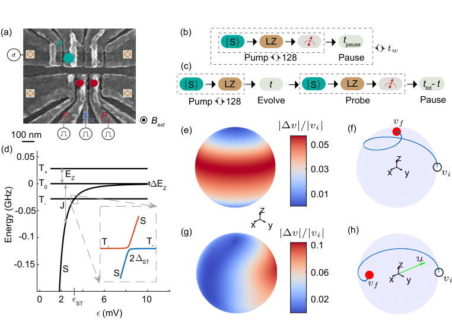
<figcaption class="paper-figure-caption"><b>Fig 1.</b> FIG. 1. Experimental setup. (a) Scanning electron micrograph of a device nominally identical to the one used in this work. The plunger gates P1(2) define the ST qubit, and the gate Ps defines the sensor dot. (b) Pulse sequences used for probing the screened dark states and (c) for the phase control experiment. (d) Relevant energy levels for the experiment. Zeeman energy, Ez, separates the two polarized triplet states, T±, from the unpolarized triplet state T0. ∆Ez denotes the longitudinal Zeeman field gradient between the dots while J is the effective exchange coupling that separates the states S and T0. (e) Net change in the nuclear polarization vector after one LZ sweep and pause, as a...</figcaption>
</figure>
<figure class="paper-figure-card">
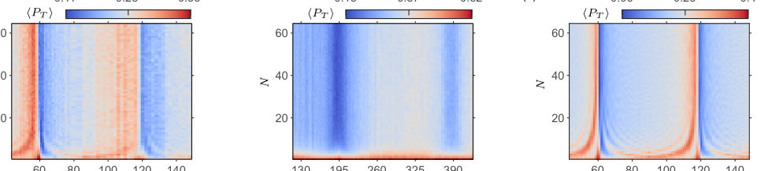
<figcaption class="paper-figure-caption"><b>Fig 2.</b> FIG. 2. Screened dark state. (a) Triplet probability ⟨PT ⟩(red) and root-mean-square gap ⟨|∆|2 ST ⟩1/2 (blue) vs. tw at Bext = 2 mT (left) and 0.6 mT (right) after 128 LZ sweeps. The lines connecting the data points are guides to the eye. (b) ⟨PT ⟩vs. LZ sweep number N and tw. After a few tens of LZ sweeps, the system reaches a steady state. (c) t(1) w , t(2) w , and ntL vs. Bext (d) Numerical simulations corresponding to the experiments in (b) at Bext = 2 mT with ∆HF = 100 kHz and u = 100 kHz (see Supplementary Material).</figcaption>
</figure>
<figure class="paper-figure-card">
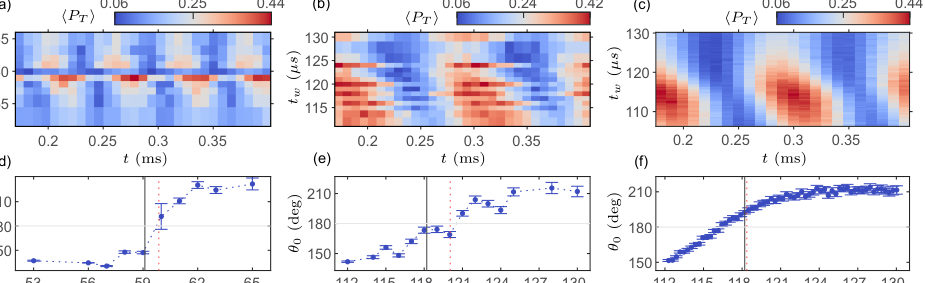
<figcaption class="paper-figure-caption"><b>Fig 3.</b> FIG. 3. Nuclear-spin phase lock. ⟨PT ⟩vs. tw and evolution time t for (a) Bext = 2 mT and (b) Bext = 1 mT. (c) Simulation at Bext = 1 mT and u = 50 kHz, ∆HF = 100 kHz. For the 2-mT data, there was a device shift at tw = 60 µs, which is responsible for the low visibility as well as slightly higher error bar at that tw. Phase as a function of tw for the (d) 2-mT data, (e) 1-mT data, and (f) simulation, extracted by fitting to Eq. (3). In all of the phase plots, the horizontal light black line indicates θ0 = π, while the black solid vertical line indicates tw = tL, where θ0 = π is expected. The dashed vertical line is the inverse of the mean fitted spin precession frequencies, with values of...</figcaption>
</figure>
<figure class="paper-figure-card">
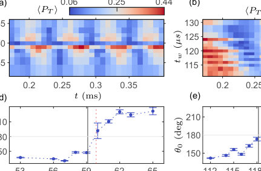
<figcaption class="paper-figure-caption"><b>Fig 4.</b> Figure 2(a) shows the results of these measurements at different magnetic fields. We observe a pronounced non-monotonic variation in ⟨PT ⟩and ⟨|∆ST |2⟩1/2 with tw. In particular, ⟨PT ⟩and ⟨|∆ST |2⟩1/2 have local min- ima at equally-spaced times t(1) w , t(2) w , · · · , which depend on Bext. Plotting t(1) w and t(2) w vs. Bext, together with the Larmor period tL and its integer multiples, reveals that t(n) w ≈ntL [Fig. 2(c)]. These data indicate that ⟨|∆ST |2⟩1/2 reaches a local minimum through dynamic nuclear polarization when the wait between LZ sweeps is an integer multiple of the Larmor period. This configu- ration with a reduced ⟨|∆ST |2⟩1/2 is a dark state because it features reduced...</figcaption>
</figure>
<figure class="paper-figure-card">

<figcaption class="paper-figure-caption"><b>Fig 5.</b> Figure 2(b) shows the transient behavior of ⟨PT ⟩as</figcaption>
</figure>
</div>

<p><strong>Summary.</strong> The research demonstrates a novel method to coherently control nuclear spins in silicon quantum dots by leveraging the internal spin-orbit coupling (SOC). By engineering specific pulse sequences that induce dynamic nuclear polarization, the nuclear spins can be phase-locked to this internal electronic field. This breakthrough opens pathways for building solid-state quantum memories with enhanced controllability.</p>
<p><strong>Why it may be interesting.</strong> This work provides a concrete demonstration of using intrinsic material couplings (SOC) as an internal clock or reference field for quantum memory elements, bypassing the need for external microwave infrastructure.</p>
<details>
<summary>Detailed structure</summary>
<p><strong>Main problem.</strong> To achieve coherent control over nuclear spin ensembles without relying on external phase references, which is crucial for scalable quantum memory.</p>
<p><strong>Main result.</strong> The internal electronic spin-orbit coupling (SOC) can be utilized to deterministically phase-lock the nuclear spins, enabling measurement of their coherence and precession using only internal couplings.</p>
<p><strong>Method.</strong> The study combines experimental measurements on silicon quantum dots with detailed numerical simulations of the electron-nuclear many-body system dynamics.</p>
<p><strong>Model / system.</strong> The platform is a double quantum dot in silicon hosting coupled electronic spins (S-T transitions) and nuclear spins ($ ext{}^{29}  ext{Si}$). The physics involves coupling between the electron spin, the SOC term ($u$), and the hyperfine interaction ($\Delta HF$).</p>
<p><strong>Key observables.</strong> Coherent precession of nuclear spins, inhomogeneous dephasing time ($T_2^*$), and the electronic transition probability $\langle P_T 
angle$ as a function of wait times ($t_w$) or evolution time ($t$).</p>
<p><strong>Important parameters / regimes.</strong> External magnetic fields ($ ext{B}_{    ext{ext}}$), SOC strength ($u$), hyperfine coupling ($\Delta HF$), and the ratio between these couplings.</p>
<p><strong>Assumptions / limitations.</strong> The analysis sometimes treats nuclei as classical spins for Hamiltonian derivation, and simulations account for various noise sources (e.g., white magnetic noise).</p>
<p><strong>Figures summary.</strong> Figures illustrate how SOC modifies polarization regions; subsequent figures show time evolution of $\langle P_T 
angle$ vs. $t_w$, demonstrating the stroboscopic screening effect when $t_w$ matches the Larmor period, and finally plot coherence decay envelopes.</p>
<p><strong>Paper structure.</strong> The paper progresses from establishing the need for internal control to detailing the mechanism (SOC-induced phase locking via screening), quantifying this control by measuring free precession and coherence times, and concluding with a comprehensive analysis of parameter dependence ($u$ vs $\Delta HF$).</p>
</details>
<details>
<summary>Abstract</summary>
<p>Because they have such long coherence times, nuclear spins have extraordinary potential for use in quantum information processing devices. However, coherent nuclear spin control generally requires external phase references, such as microwave control fields. Here, we phase-lock a $^{29}$Si nuclear spin ensemble in a silicon quantum dot using only the internal electronic spin-orbit coupling as a phase reference. When driven with the quantum-dot electrons, the nuclear spins align themselves to a phase determined by the electronic spin-orbit coupling and the timing of the drive protocol. This enables us to measure the coherent precession and inhomogeneous dephasing of the nuclear spins. We corroborate our results with detailed numerical simulations of the many-body electron nuclear system. Our work opens new routes for coherently controlling solid-state nuclear spin ensembles.</p>
</details>
<p><sub><a href="#top">↑ back to top</a></sub></p>

<p><a id="paper-2606.19947"></a></p>
<h3 id="qmaxcal-path-space-regularization-for-open-quantum-control-via-girsanovs-theorem"><a href="http://arxiv.org/abs/2606.19947v1">QMaxCal: Path-Space Regularization for Open Quantum Control via Girsanov's Theorem</a></h3>
<p><strong>Authors:</strong> Merijn Moody, Zier Mensch, Miranda C. N. Cheng, Peter G. Bolhuis, Max Welling<br>
<strong>Type:</strong> both · <strong>Category:</strong> quantum information and computing · <strong>PDF:</strong> <a href="https://arxiv.org/pdf/2606.19947v1">https://arxiv.org/pdf/2606.19947v1</a><br>
<strong>Analysis basis:</strong> full PDF text, analyzed in chunks
<strong>Topic relevance:</strong> 🔥 <code>methods for driven-dissipative</code> <strong>4/5</strong> · 🔥 <code>quantum measurements</code> <strong>4/5</strong> · <code>measurement-induced transitions</code> <strong>3/5</strong> · <code>correlated / nonlocal dissipation</code> <strong>2/5</strong> · <code>non-equilibrium dynamics</code> <strong>2/5</strong> · <code>Keldysh / 2PI / non-Gaussian methods</code> <strong>1/5</strong> · <code>QC/QI experiment</code> <strong>1/5</strong> · <code>driven-dissipative phase transition</code> <strong>1/5</strong></p>
<div class="figure-strip-hint">↔ Scroll figures horizontally</div>
<div class="paper-figures-scroll">
<figure class="paper-figure-card">
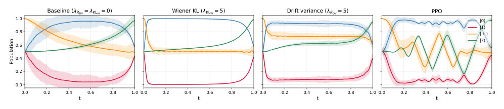
<figcaption class="paper-figure-caption"><b>Fig 1.</b> Figure 1. SSE-trajectory population variance at γT = 2. Mean populations across 128 SSE samples (lines) with ±1σ bands for the baseline (λKLW = λRDV = 0), Wiener KL (λKLW = 5), drift-variance (λRDV = 5), and PPO. Wiener KL contracts the time-integrated population variance from 0.0321 (baseline) to 0.0021, a 15× reduction, consistent with the policy routing the state along ker L where both the SSE drift and noise vanish. Drift-variance reduces the variance relative to baseline but stabilizes outside ker L.</figcaption>
</figure>
<figure class="paper-figure-card">
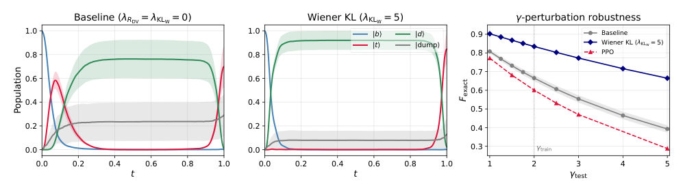
<figcaption class="paper-figure-caption"><b>Fig 2.</b> Figure 2. Diamond system, γtrain = 2, T = 1. Left, middle: SSE-trajectory populations (mean across 128 samples, ±1σ) for baseline (F = 0.665) and Wiener KL (λKLW = 5, F = 0.834); the regularizer routes population through |d⟩∈ker L rather than the lossy direct coupling. Right: fidelity vs. γtest for policies trained at γ = 2; full statistics in Appendix E.4.</figcaption>
</figure>
<figure class="paper-figure-card">
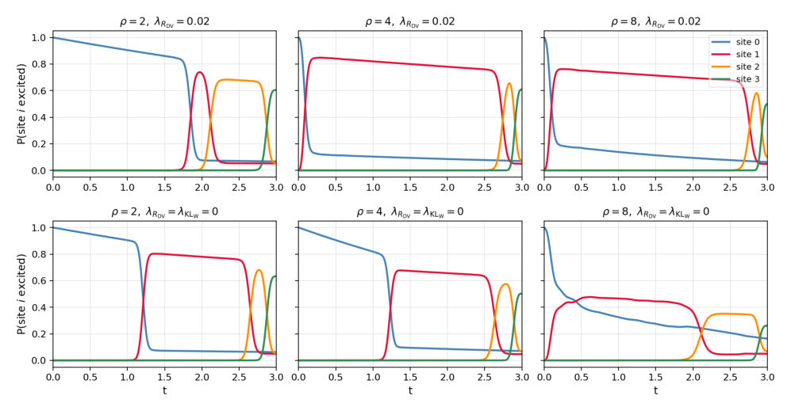
<figcaption class="paper-figure-caption"><b>Fig 3.</b> Figure 3. Site populations across the asymmetry sweep. Columns: ρ ∈{2, 4, 8}. Rows: drift-variance (λRDV = 0.02, top), baseline (bottom). Each panel shows the single-site excitation population ⟨ψ(t)|(I −σ(i) z )/2|ψ(t)⟩at sites i ∈{0, 1, 2, 3} (i.e., the probability that site i holds the excitation); these four observables are the natural readout because the task is excitation transfer. Curves are drawn from a representative seed at each ρ cell (selection rule and per-seed fidelities in Appendix E.5, Table 8).</figcaption>
</figure>
<figure class="paper-figure-card">
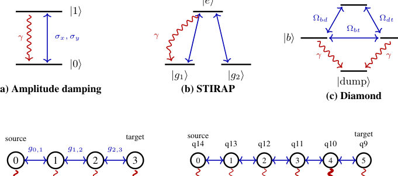
<figcaption class="paper-figure-caption"><b>Fig 4.</b> Figure 4. Level structure and noise structure of the five benchmarks. Blue double arrows mark coherent control couplings; red squiggly arrows mark decoherence channels (each acts on the density matrix as a Lindblad operator Lk). (a) Amplitude damping: |1⟩ decays to |0⟩, two controls drive arbitrary single-qubit rotations. (b) STIRAP: two stable ground states |g1⟩, |g2⟩coupled through a lossy excited state |e⟩that decays back to |g1⟩. (c) Diamond: two lossy computational states |b⟩, |t⟩each decay to |dump⟩; the auxiliary state |d⟩is in ker Lb ∩ker Lt and provides a safe indirect route. (d) Chain-4: four qubits with site-specific dephasing; edge sites carry rates ρκint, interior sites κint...</figcaption>
</figure>
<figure class="paper-figure-card">
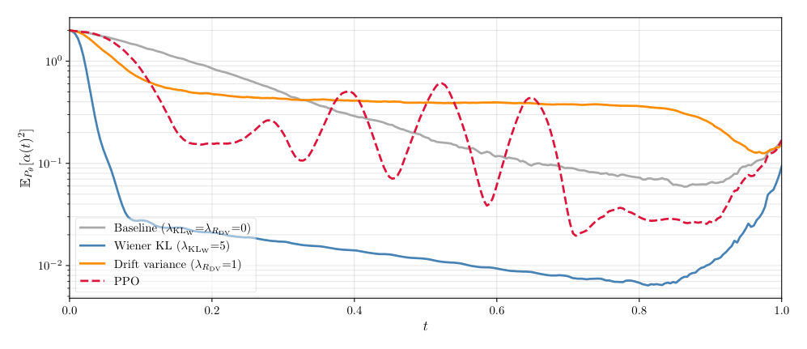
<figcaption class="paper-figure-caption"><b>Fig 5.</b> Figure 5. Wiener KL integrand Eψ[α(t)2], γT = 2. Trajectory-averaged drift squared on a logarithmic axis. Wiener KL suppresses α toward ker L, reducing the time-integrated value 1</figcaption>
</figure>
</div>

<p><strong>Summary.</strong> The paper introduces QMaxCal, a novel path-space regularization technique for open quantum control derived from Girsanov's theorem applied to quantum trajectories. It yields two regularizers ($  ext{KL}_W$ and $    ext{RDV}$) that guide the system away from decoherence effects by penalizing observable deviations in the noise process. These methods significantly boost final-state fidelity across diverse multi-qubit benchmarks compared to existing optimization techniques.</p>
<p><strong>Why it may be interesting.</strong> This work provides a powerful, mathematically rigorous framework for optimizing quantum controls in noisy environments by penalizing the <em>consequences</em> of noise on the trajectory distribution rather than just the control pulse amplitude itself. The computational advantage of using trajectory space over density matrices is also notable.</p>
<details>
<summary>Detailed structure</summary>
<p><strong>Main problem.</strong> Developing reliable quantum control policies for open quantum systems that can effectively combat decoherence induced by environmental noise.</p>
<p><strong>Main result.</strong> The proposed path-space regularizers significantly outperform unregularized gradient-based and reinforcement learning baselines, achieving up to 50% reduction in infidelity across various multi-qubit benchmarks.</p>
<p><strong>Method.</strong> The method uses Girsanov's theorem applied to quantum trajectories (stochastic Schrödinger equation) to derive closed-form, differentiable estimators of the KL divergence between path measures. This forms the basis for two novel regularizers: Wiener KL ($ ext{KL}_W$) and Drift-Variance ($    ext{RDV}$).</p>
<p><strong>Model / system.</strong> The systems are open quantum systems modeled by Lindblad master equations, simulated via stochastic Schrödinger equations (SSE) using diffusive unravellings. Benchmarks include single/multi-qubit chains, STIRAP processes, and the IBM Kingston processor.</p>
<p><strong>Key observables.</strong> Final-state fidelity ($F$), time-integrated population variance ($\int 	ext{Var}[P_k(t)] dt$), occupation of lossy states, and path KL divergence terms.</p>
<p><strong>Important parameters / regimes.</strong> Decoherence rates ($\kappa, \gamma$), noise mismatch factors (e.g., $2.5	imes$ mismatch), and regularization weights ($\lambda_{	ext{KLW}}, \lambda_{	ext{RDV}}$).</p>
<p><strong>Assumptions / limitations.</strong> The analysis relies on the diffusive unravelling of the SSE, which is mathematically tractable via Girsanov's theorem; it does not directly apply to jump unravellings or non-Markovian environments.</p>
<p><strong>Figures summary.</strong> Figures compare trajectory population variance and fidelity across different regularization schemes (Wiener KL vs. baseline) for tasks like $|+
angle 	o |Y
angle$ and STIRAP, demonstrating suppression of lossy state occupation.</p>
<p><strong>Paper structure.</strong> The paper builds from the theoretical foundation using Girsanov's theorem to derive path-space regularizers ($ ext{KL}_W$, $   ext{RDV}$), then applies these methods sequentially across multiple physical benchmarks (qubit tasks, STIRAP, superconducting chains) while comparing performance against standard control optimization techniques.</p>
</details>
<details>
<summary>Abstract</summary>
<p>Reliable quantum control in the presence of decoherence requires policies that combat the effect of environmental noise on the controlled dynamics. Open quantum systems under continuous monitoring generate classical measurement records whose drift depends on the noise experienced by the system; the records of two evolutions sharing the same decoherence channels differ only in this drift, so Girsanov's theorem yields a closed-form, differentiable estimator of the KL divergence between their trajectory distributions. We instantiate this estimator with two physically motivated reference measures, yielding two regularizers that both drive the system toward states where the effects of decoherence are minimal: the Wiener KL (KL_W), which is empirically more effective under certain conditions on the noise model, and the drift-variance regularizer (R_DV), which works for all noise models. Both are qualitatively distinct from existing penalties on control fluence or smoothness: they penalize the observable consequences of control on the decoherence channels rather than the control amplitude itself. The regularizers outperform unregularized gradient-based and reinforcement-learning baselines across a range of open quantum systems -- including single- and multi-qubit benchmarks and a multi-qubit chain calibrated to a published snapshot of the IBM Kingston processor -- along several axes of evaluation: final-state fidelity, robustness to mismatch in the assumed noise model (gains grow from +17 pp at training noise to +27 pp under 2.5x noise mismatch), and occupation of forbidden states. The regularizers reduce infidelity by up to 50%, with ~16% gains on the calibrated IBM Kingston chain.</p>
</details>
<p><sub><a href="#top">↑ back to top</a></sub></p>

<p><a id="paper-2606.19748"></a></p>
<h3 id="variational-polaron-theory-for-ground-states-of-strongly-coupled-light-matter-and-electron-phonon-systems"><a href="http://arxiv.org/abs/2606.19748v1">Variational Polaron Theory for Ground States of Strongly Coupled Light-Matter and Electron-Phonon Systems</a></h3>
<p><strong>Authors:</strong> Nguyen Thanh Phuc<br>
<strong>Type:</strong> theory · <strong>Category:</strong> other · <strong>PDF:</strong> <a href="https://arxiv.org/pdf/2606.19748v1">https://arxiv.org/pdf/2606.19748v1</a><br>
<strong>Analysis basis:</strong> full PDF text, analyzed in chunks
<strong>Topic relevance:</strong> 🔥 <code>correlated cavity matter</code> <strong>4/5</strong> · <code>Dicke superradiance</code> <strong>3/5</strong> · <code>analog quantum simulation</code> <strong>3/5</strong> · <code>Tavis-Cummings &amp; cavity-many-emitter</code> <strong>2/5</strong> · <code>Keldysh / 2PI / non-Gaussian methods</code> <strong>1/5</strong> · <code>driven-dissipative phase transition</code> <strong>1/5</strong> · <code>entanglement &amp; information structure</code> <strong>1/5</strong> · <code>exotic spin models in light-matter</code> <strong>1/5</strong> · <code>methods for driven-dissipative</code> <strong>1/5</strong> · <code>superradiant laser</code> <strong>1/5</strong></p>
<div class="figure-strip-hint">↔ Scroll figures horizontally</div>
<div class="paper-figures-scroll">
<figure class="paper-figure-card">
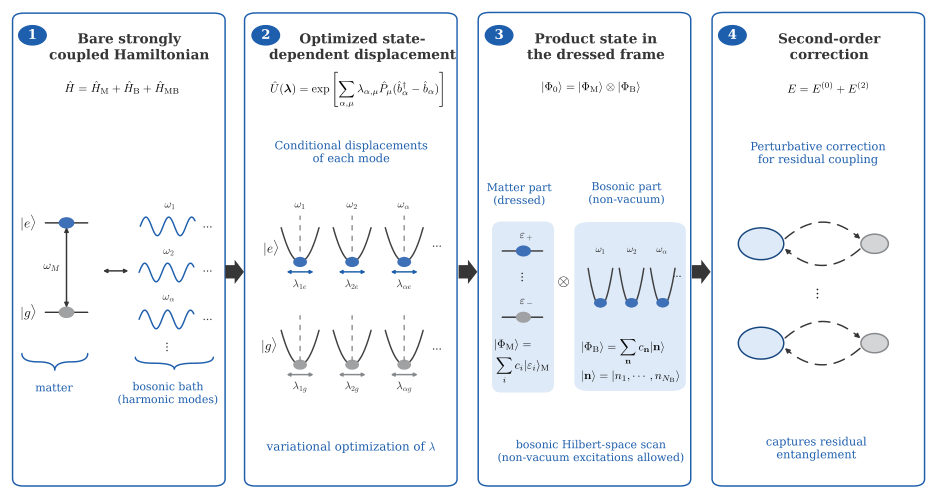
<figcaption class="paper-figure-caption"><b>Fig 1.</b> FIG. 1: Schematic of the variational polaron theory. Optimized state-dependent displacements absorb the dominant bosonic dressing into the basis, yielding a dressed frame in which a matter–boson product state is variationally optimized. Residual matter–boson correlations are subsequently included by a second-order perturbative correction.</figcaption>
</figure>
<figure class="paper-figure-card">
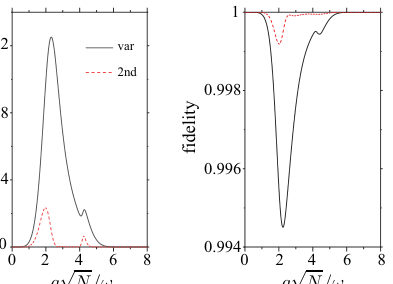
<figcaption class="paper-figure-caption"><b>Fig 2.</b> FIG. 2: Dicke-model ground-state accuracy for N = 1. ‘var’ denotes the optimized zeroth-order result, whereas ‘2nd’ in- cludes the second-order correction. The correction lowers the maximum energy error below 0.2% and raises the fidelity above 0.999, quantifying the practical onset of transformed- frame decoupling.</figcaption>
</figure>
<figure class="paper-figure-card">
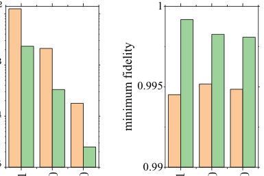
<figcaption class="paper-figure-caption"><b>Fig 3.</b> FIG. 3: Scaling of Dicke-model accuracy with emitter num- ber. (a) Maximum relative ground-state energy error, |δE|/E, for N = 1, 10, and 100; orange and green bars denote the zeroth-order and second-order results, respectively. (b) Minimum ground-state fidelity over the same coupling range, showing near-unity agreement after the perturbative correc- tion.</figcaption>
</figure>
<figure class="paper-figure-card">
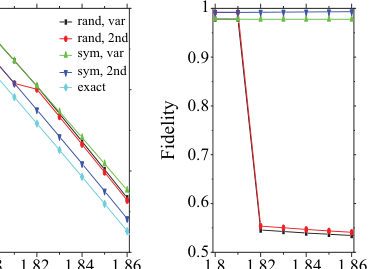
<figcaption class="paper-figure-caption"><b>Fig 4.</b> FIG. 5: Effect of translational-symmetry constraint on the Holstein-model ground state near intermediate coupling. (a) Ground-state energy versus g/ω for unconstrained random initial states (‘rand’) and translationally symmetric states (‘sym’), compared with exact diagonalization; ‘var’ and ‘2nd’ denote zeroth-order and second-order results. (b) Corre- sponding fidelity. The unconstrained solution can have lower variational energy but poor fidelity, whereas the symmetry- constrained branch remains close to the exact ground state.</figcaption>
</figure>
<figure class="paper-figure-card">
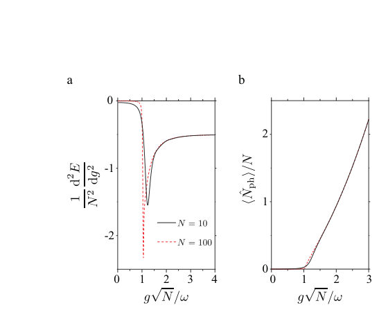
<figcaption class="paper-figure-caption"><b>Fig 5.</b> FIG. 4: Superradiant quantum phase transition in the Dicke model. (a) Scaled second derivative of the ground-state en- ergy, N −2d2E/dg2, versus g √</figcaption>
</figure>
</div>

<p><strong>Summary.</strong> This paper introduces a variational polaron theory to accurately calculate the ground states of systems strongly coupled between matter excitations and bosonic fields. By using an optimized, state-dependent transformation, it overcomes limitations faced by perturbative methods in the ultrastrong coupling regime. The framework is rigorously tested on both light-matter (Dicke) and electron-phonon (Holstein) models with high quantitative accuracy.</p>
<p><strong>Why it may be interesting.</strong> This work directly addresses nonperturbative quantum dynamics in cavity QED and molecular physics, providing a robust tool for calculating dressed ground states where standard perturbation theory fails.</p>
<details>
<summary>Detailed structure</summary>
<p><strong>Main problem.</strong> Developing a reliable ground-state theory for systems exhibiting strong coupling between matter degrees of freedom (like electrons or atoms) and bosonic modes (light or phonons).</p>
<p><strong>Main result.</strong> The variational polaron framework provides an asymptotically correct, nonperturbative method that accurately models dressing effects in both weak and ultrastrong coupling regimes.</p>
<p><strong>Method.</strong> It employs a state-dependent polaron transformation followed by variational optimization of the resulting product-state ansatz, with residual correlations treated via second-order perturbation theory.</p>
<p><strong>Model / system.</strong> The theory is applied to strongly coupled light-matter systems (Dicke model) and electron-phonon systems (Holstein model), where the Hamiltonian includes matter ($\hat{H}_M$), bosonic ($\hat{H}_B$), and coupling ($\hat{H}_{MB}$) terms.</p>
<p><strong>Key observables.</strong> Ground-state energies, fidelities, and superradiant transition characteristics.</p>
<p><strong>Important parameters / regimes.</strong> The coupling strength ratio ($g/\omega$) is critical, testing regimes from weak to ultrastrong coupling.</p>
<p><strong>Assumptions / limitations.</strong> The zeroth-order state is a dressed reference frame derived from the polaron transformation; residual correlations beyond this product state are treated perturbatively.</p>
<p><strong>Figures summary.</strong> Figures benchmark the theory on the Dicke model (showing superradiant transition and error reduction) and the Holstein model (comparing energy vs. symmetry constraints).</p>
<p><strong>Paper structure.</strong> The paper introduces the variational polaron framework, details the transformation and optimization procedure, and validates its accuracy by benchmarking against established models like the Dicke and Holstein Hamiltonians.</p>
</details>
<details>
<summary>Abstract</summary>
<p>Strong light-matter and electron-phonon coupling generate ground states dressed by virtual bosonic excitations, making bare-state truncations and perturbative treatments unreliable in the ultrastrong-coupling regime. We introduce a nonperturbative variational ground-state framework based on a state-dependent polaron transformation, combined with a product-state ansatz and a second-order perturbative correction for residual matter-boson entanglement. We show that the optimized transformed frame becomes asymptotically decoupled at infinite coupling, because the leading linear coupling is canceled while off-diagonal matter transitions are suppressed by displaced-oscillator overlaps. The approach is asymptotically correct in both weak- and strong-coupling limits and remains accurate in the intermediate regime, where fixed polaron transformations are least reliable. Dicke-model benchmarks reproduce ground-state energies, fidelities, and the superradiant transition, with second-order energy errors below 0.2%. Holstein-model benchmarks yield errors below 0.5% and clarify how translational symmetry affects wave-function quality. This dressed-basis framework enables nonperturbative modeling of strongly coupled light-matter and electron-phonon systems.</p>
</details>
<p><sub><a href="#top">↑ back to top</a></sub></p>

<p><a id="paper-2606.20551"></a></p>
<h3 id="benchmark-of-quantum-algorithms-for-ground-state-preparation-in-the-presence-of-noise"><a href="http://arxiv.org/abs/2606.20551v1">Benchmark of quantum algorithms for ground state preparation in the presence of noise</a></h3>
<p><strong>Authors:</strong> Daniel Molpeceres, Sirui Lu, J. Ignacio Cirac, Barbara Kraus<br>
<strong>Type:</strong> theory · <strong>Category:</strong> quantum information and computing · <strong>PDF:</strong> <a href="https://arxiv.org/pdf/2606.20551v1">https://arxiv.org/pdf/2606.20551v1</a><br>
<strong>Analysis basis:</strong> full PDF text, analyzed in chunks
<strong>Topic relevance:</strong> 🔥 <code>analog quantum simulation</code> <strong>4/5</strong> · <code>driven-dissipative phase transition</code> <strong>3/5</strong> · <code>methods for driven-dissipative</code> <strong>3/5</strong> · <code>non-equilibrium universality</code> <strong>2/5</strong> · <code>Keldysh / 2PI / non-Gaussian methods</code> <strong>1/5</strong> · <code>correlated / nonlocal dissipation</code> <strong>1/5</strong> · <code>entanglement &amp; information structure</code> <strong>1/5</strong> · <code>non-equilibrium dynamics</code> <strong>1/5</strong></p>
<div class="figure-strip-hint">↔ Scroll figures horizontally</div>
<div class="paper-figures-scroll">
<figure class="paper-figure-card">
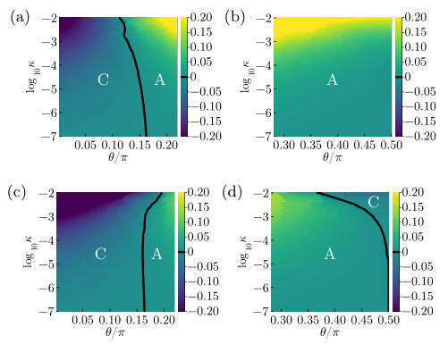
<figcaption class="paper-figure-caption"><b>Fig 1.</b> FIG. 1. Difference ecool opt −eadiab opt between the optimal relative energies achieved by the cooling and the adiabatic algorithms, plotted as a function of θ/π (horizontal axis) and log10 κ (ver- tical axis) for N = 100 systems. Negative values (blue/dark) indicate that cooling gives lower energy (region labeled “C”); positive values (yellow/bright) indicate that the adiabatic al- gorithm gives lower energy (region labeled “A”). The black contour marks eopt cool = eopt adiab. (a) Topological phase, adiabatic algorithm starting from |0⟩⊗N (ideal): cooling gives lower energy throughout most of this phase. (b) Trivial phase, ideal adiabatic algorithm: the adiabatic algorithm gives lower en-...</figcaption>
</figure>
<figure class="paper-figure-card">
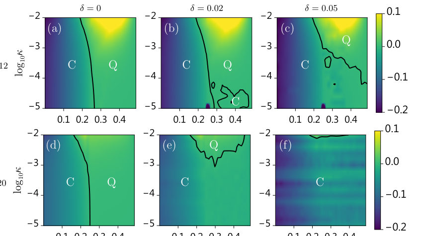
<figcaption class="paper-figure-caption"><b>Fig 2.</b> FIG. 2. Difference ecool opt −eQAOA opt as a function of θ/π (horizontal) and log10 κ (vertical) for N = 20. Blue: cooling gives lower energy (labeled “C”); yellow: QAOA gives lower energy (labeled “Q”); black contour: equal performance. Top row (Npars = 12): cooling with coupling range rc = 0.5 and two cycles; QAOA with p = 6 layers. Bottom row (Npars = 20): rc = 1.5, p = 10. Columns show increasing deviation of the exact parameters, δ: (a, d) δ = 0 (exact parameters); (b, e) δ = 0.02; (c, f) δ = 0.05, each averaged over 100 random perturbations. Both algorithms start from ρcool(π/2). As δ increases, the region where cooling outperforms QAOA expands, demonstrating cooling’s greater...</figcaption>
</figure>
<figure class="paper-figure-card">
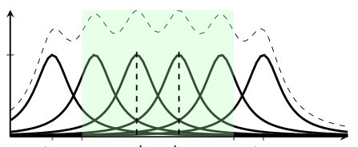
<figcaption class="paper-figure-caption"><b>Fig 3.</b> FIG. 3. Individual cooling rates γk,i c (Lorentzian profiles) and their sum ˜γc k (dashed curve) as a function of the mode energy ϵk for a set of bath frequencies {∆r} equally spaced over the interval [∆m, ∆M]. The spacing between two adjacent frequencies is xγ0, where x is a dimensionless parameter and γ0 ∝1/t is the Lorentzian linewidth. Each frequency generates a resonance peak of width γ0 centered at ϵk = ∆r and height 2g2/γ2 0. When the peaks overlap sufficiently (x ≲1), the averaged cooling rate γc k becomes approximately independent of k, ensuring uniform cooling of all modes in the range [ϵm, ϵM] (green area).</figcaption>
</figure>
<figure class="paper-figure-card">
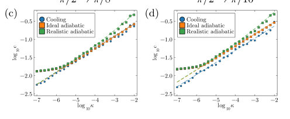
<figcaption class="paper-figure-caption"><b>Fig 4.</b> FIG. 4. Optimal relative energy eopt (log scale) as a func- tion of the noise strength κ (log scale) for N = 100 sites, comparing three protocols: analytic cooling with gt = 0.5 and ∆M(m) = ϵM(m) ± 0.4 (blue circles), ideal adiabatic with initial state |0⟩⊗N (orange squares), and realistic adiabatic with initial state ρcool(π/2) (green squares). Dashed lines show the analytic predictions from Eq. (24) (blue, κ1/3) and Appendix B (orange, green). (a) θf = π/3 (trivial phase): the adiabatic κ2/3 scaling gives lower energy than the achievable rate of the cooling algorithm, which is κ1/3. (b) θf = π/6 (topological phase): both scale as κ1/3; the adiabatic algorithm gives slightly lower energy....</figcaption>
</figure>
<figure class="paper-figure-card">
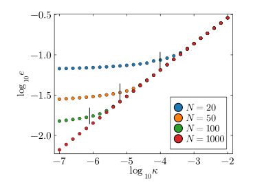
<figcaption class="paper-figure-caption"><b>Fig 5.</b> FIG. 5. Optimal relative energy eadiab opt as a function of the noise rate κ for different system sizes N and target θf = π/10 for the ideal adiabatic algorithm. The smaller the system size, the more prominent the effect of the k = N/2 mode is, and the larger the κmin where the crossover (predicted by the vertical lines) happens. The predicted plateau values of log10 e are determined by the finite-size floor 2ϵN/2/|EGS|.</figcaption>
</figure>
</div>

<p><strong>Summary.</strong> This paper rigorously benchmarks ground state preparation algorithms (cooling, adiabatic, QAOA) for fermionic systems subject to environmental noise. It establishes that the optimal protocol is highly dependent on the system's underlying quantum phase, demonstrating superior robustness for cooling protocols in topologically non-trivial regimes compared to other methods.</p>
<p><strong>Why it may be interesting.</strong> This work provides a rigorous, quantitative comparison of state preparation techniques under realistic noise models, directly informing the resource estimation for fault-tolerant quantum computation in condensed matter contexts.</p>
<details>
<summary>Detailed structure</summary>
<p><strong>Main problem.</strong> The paper benchmarks various quantum algorithms—cooling, adiabatic evolution, and QAOA—to determine the most efficient method for preparing a ground state of a fermionic system when subjected to environmental noise.</p>
<p><strong>Main result.</strong> The optimal algorithm depends critically on the phase transition of the Hamiltonian: cooling protocols are superior in the topological phase, while adiabatic methods show advantages in the trivial phase. Furthermore, cooling is shown to be more robust against parameter imperfections than QAOA.</p>
<p><strong>Method.</strong> The analysis combines analytical derivations of scaling laws for achievable relative energy with numerical simulations across different noise regimes and system parameters.</p>
<p><strong>Model / system.</strong> The model uses an exactly solvable family of quadratic fermionic Hamiltonians, $H_S(	heta)$, which exhibits a quantum phase transition between trivial ($    heta &gt; \pi/4$) and topological ($ heta &lt; \pi/4$) phases. Noise is modeled using depolarizing noise.</p>
<p><strong>Key observables.</strong> The primary observable is the achievable relative energy ($e = (E - E_{GS})/E_{GS}$), analyzed as a function of the noise rate $\kappa$.</p>
<p><strong>Important parameters / regimes.</strong> Noise rate ($\kappa$), Hamiltonian parameter ($  heta$) defining the phase, and algorithm-specific parameters like evolution time ($T$) or cooling cycles.</p>
<p><strong>Assumptions / limitations.</strong> The analysis relies on approximations such as weak coupling limits, low-noise regimes, and specific initial state assumptions for adiabatic/QAOA protocols.</p>
<p><strong>Figures summary.</strong> Figures compare the relative energy differences between algorithms (e.g., $e_{	ext{cool}} - e_{	ext{QAOA}}$) across varying noise levels ($\kappa$) and system phases ($  heta$), illustrating crossovers in performance dominance.</p>
<p><strong>Paper structure.</strong> The paper systematically compares three protocols—adiabatic, QAOA, and cooling—by deriving scaling laws for the relative energy $e(\kappa)$ in both trivial and topological regimes. It then analyzes the trade-offs between non-adiabatic excitations (time dependence) and noise accumulation ($\kappa$ dependence).</p>
</details>
<details>
<summary>Abstract</summary>
<p>We compare the performance of representative cooling, adiabatic, and optimization algorithms for ground-state preparation in the presence of noise. Using an exactly solvable family of quadratic fermionic Hamiltonians subject to depolarizing noise, we derive the scaling of the achievable relative energy as a function of the noise rate and support these results with numerical simulations. The Hamiltonian exhibits two phases, separated by a quantum phase transition. As expected, the performance of the different algorithms depends on the phase: adiabatic evolution is favorable in the trivial phase, while a multi-frequency cooling algorithm, as proposed in [1], becomes competitive or superior in the topological phase, where gap-closing limits adiabatic protocols. We further present numerical results for the quantum approximate optimization algorithm [2], showing that it performs competitively with cooling in the trivial phase but is typically outperformed in the topological regime. Finally, we show that for this model the cooling protocol exhibits enhanced robustness to parameter imperfections, highlighting its potential advantage for realistic implementations of noisy quantum state preparation.   The analytical approach developed here, in conjunction with numerical validation, establishes an extendable approach to benchmarking ground-state preparation algorithms.</p>
</details>
<p><sub><a href="#top">↑ back to top</a></sub></p>

<p><a id="paper-2606.20271"></a></p>
<h3 id="extracting-the-physical-content-of-liouvillian-eigenmodes-semiclassical-quantization"><a href="http://arxiv.org/abs/2606.20271v1">Extracting the physical content of Liouvillian eigenmodes: Semiclassical quantization</a></h3>
<p><strong>Authors:</strong> Ashlin V Thomas, Felix Fritzsch, Masudul Haque, Shovan Dutta<br>
<strong>Type:</strong> theory · <strong>Category:</strong> statistical mechanics · <strong>PDF:</strong> <a href="https://arxiv.org/pdf/2606.20271v1">https://arxiv.org/pdf/2606.20271v1</a><br>
<strong>Analysis basis:</strong> full PDF text, analyzed in chunks
<strong>Topic relevance:</strong> 🔥 <code>methods for driven-dissipative</code> <strong>4/5</strong> · <code>Keldysh / 2PI / non-Gaussian methods</code> <strong>3/5</strong> · <code>driven-dissipative phase transition</code> <strong>3/5</strong> · <code>non-equilibrium dynamics</code> <strong>2/5</strong> · <code>non-equilibrium universality</code> <strong>2/5</strong> · <code>correlated / nonlocal dissipation</code> <strong>1/5</strong> · <code>scars &amp; prethermalization</code> <strong>1/5</strong></p>
<div class="figure-strip-hint">↔ Scroll figures horizontally</div>
<div class="paper-figures-scroll">
<figure class="paper-figure-card">
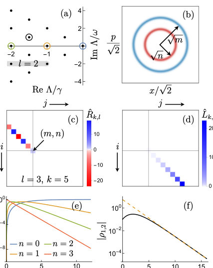
<figcaption class="paper-figure-caption"><b>Fig 1.</b> FIG. 2. (a) Liouville spectrum of a harmonic oscillator with frequency ω and damping γ. The imaginary parts are set by the phase winding l, corresponding to the l-th diagonal in the Fock basis. (b) An eigenmode (for l ̸= 0) represents coherence between two Fock states m and n. (c,d) Corresponding right and left eigenstates overlap only at (m, n). (e) Populations of different Fock states after starting from |n = 3⟩with γ = 0.5, each governed by a specific eigenvalue circled in (a) with the same color. (f) Coherence between Fock states |1⟩and |2⟩ after starting from the coherent state |α = 2⟩with ω = 1, γ = 0.5. The asymptotic decay (dashed line) is governed by the corresponding eigenmode...</figcaption>
</figure>
<figure class="paper-figure-card">
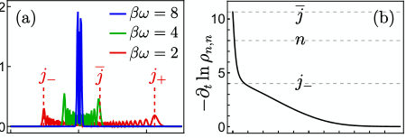
<figcaption class="paper-figure-caption"><b>Fig 2.</b> FIG. 3. (a) Thermal broadening of the eigenmode with m = n = 100 in the distribution over Fock states |j⟩at different inverse temperatures β. (b) Instantaneous decay rate of the return probability of the Fock state |n = 8⟩for βω = 2, γ = 1.</figcaption>
</figure>
<figure class="paper-figure-card">
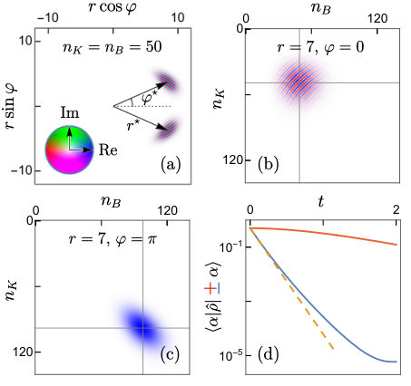
<figcaption class="paper-figure-caption"><b>Fig 3.</b> FIG. 4. (a) A section of the super Husimi function CnK,nB(αK, αB) in doubled phase space (see text) for the eigenmode that represents population of the Fock state |n = 50⟩. Here, r = |αK| = |αB| and φ = arg(α∗ KαB). Arrows show the peak locations at r⋆&gt; √n and φ⋆̸= 0. (b,c) Dis- tribution over the eigenmodes for a given r and φ, peaked at n⋆ K = n⋆ B ≈r2 for φ = 0 and n⋆ K = n⋆ B ≈2r2 for φ = π (gray lines). (d) Starting from a cat state |α⟩+ |−α⟩with α = 3, ω = 0, γ = 0.5, the population ⟨α|ˆρ|α⟩decays quadratically, whereas the coherence ⟨α|ˆρ| −α⟩decays at a rate given by the dominant eigenmode for φ = π (dashed line).</figcaption>
</figure>
<figure class="paper-figure-card">
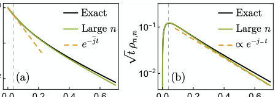
<figcaption class="paper-figure-caption"><b>Fig 4.</b> FIG. 5. Return probability of |n = 10⟩for βω = 2, γ = 1, comparing exact [Eq. (21)] and large-n [Eq. (22)] predictions. The gray line at t = 1/(2j) is where √</figcaption>
</figure>
</div>

<p><strong>Summary.</strong> The paper develops a novel quasiprobability measure to give physical meaning to Liouvillian eigenmodes in open quantum systems. By interpreting these modes as coherence distributions, the authors successfully generalize semiclassical quantization concepts, showing that quantized orbital structures persist even under damping from a thermal bath.</p>
<p><strong>Why it may be interesting.</strong> This work provides a powerful theoretical tool—the quasiprobability measure—to bridge semiclassical quantization concepts (like invariant tori) from conservative Hamiltonian systems into the complex realm of open quantum dynamics governed by dissipation.</p>
<details>
<summary>Detailed structure</summary>
<p><strong>Main problem.</strong> The primary challenge is interpreting the physical meaning of Liouvillian eigenmodes for open quantum systems, where standard energy eigenstates are insufficient due to time-decaying right and left eigenstates.</p>
<p><strong>Main result.</strong> The authors introduce a quasiprobability measure that successfully interprets an eigenmode as a coherence distribution, demonstrating that semiclassical quantization concepts (like quantized orbits) can be extended to dissipative open systems.</p>
<p><strong>Method.</strong> They employ a physically motivated quasiprobability measure combining right and left eigenstates, mapping the dynamics onto a doubled phase space structure. This allows for analyzing spectral properties via generalized Husimi functions.</p>
<p><strong>Model / system.</strong> The study focuses on open quantum systems governed by Lindblad master equations ($rac{d\hat{
ho}}{dt} = L\hat{
ho}$), specifically modeling damped harmonic oscillators and quadratic Liouvillians. The analysis uses Fock basis representations and superoperators.</p>
<p><strong>Key observables.</strong> Coherence measure ($C_p$), return probability, Super Husimi function $C_{n_K, n_B}(\alpha_K, \alpha_B)$, and the persistence of quantized 'orbits' in phase space.</p>
<p><strong>Important parameters / regimes.</strong> Damping rates ($\gamma$), thermal bath temperature (related to $eta$), and relative phases ($\phi$) between coherent components.</p>
<p><strong>Assumptions / limitations.</strong> The dynamics are assumed to be CPTP (Completely Positive Trace-Preserving) and Markovian. For quantization results, the damping is often assumed isotropic in phase space.</p>
<p><strong>Figures summary.</strong> Figures illustrate quantized 'orbits' for damped oscillators, show the Liouville spectrum revealing coherence between Fock states, and map out sections of the super Husimi function in doubled phase space, demonstrating peak locations.</p>
<p><strong>Paper structure.</strong> The paper progresses by first establishing the need for a new measure (quasiprobability) to interpret open system dynamics. It then applies this framework to simple models like the damped oscillator, deriving explicit formulas and asymptotic results for coherence distributions and return amplitudes.</p>
</details>
<details>
<summary>Abstract</summary>
<p>Unlike in closed quantum systems where individual energy eigenstates are understood as physical excitations, open quantum systems have distinct right and left eigenstates of the Liouvillian that decay with time and are difficult to interpret. Here we introduce a physically motivated quasiprobability measure combining the two types of eigenstates that interprets a Liouville eigenmode as a set of coherences. This coherence measure is intimately connected to the return probability and allows one to visualize the modes as quasiprobability distributions in a "doubled" phase space. Using this measure we show that, remarkably, an oscillator retains its quantized "orbits" in phase space for a large class of linear and nonlinear damping, thus providing a formulation of semiclassical quantization for open systems. The orbits have measurable dynamical signatures and are broadened in the presence of a thermal bath, similar to energy levels. For quadratic systems, our results yield an extension of the concept of invariant tori, which play a central role in Hamiltonian systems.</p>
</details>
<p><sub><a href="#top">↑ back to top</a></sub></p>

<p><a id="paper-2606.20507"></a></p>
<h3 id="smooth-time-dependent-control-of-dipolar-bose-einstein-condensates"><a href="http://arxiv.org/abs/2606.20507v1">Smooth time-dependent control of dipolar Bose-Einstein condensates</a></h3>
<p><strong>Authors:</strong> Chris Whitty, Aitor Alaña, Michele Modugno, Xi Chen, Géza Tóth, Andreas Ruschhaupt, Eugene Ya. Sherman<br>
<strong>Type:</strong> theory · <strong>Category:</strong> quantum gases · <strong>PDF:</strong> <a href="https://arxiv.org/pdf/2606.20507v1">https://arxiv.org/pdf/2606.20507v1</a><br>
<strong>Analysis basis:</strong> full PDF text, analyzed in chunks
<strong>Topic relevance:</strong> 🔥 <code>analog quantum simulation</code> <strong>4/5</strong> · <code>methods for driven-dissipative</code> <strong>3/5</strong> · <code>non-equilibrium dynamics</code> <strong>3/5</strong> · <code>non-equilibrium universality</code> <strong>2/5</strong> · <code>Keldysh / 2PI / non-Gaussian methods</code> <strong>1/5</strong> · <code>correlated / nonlocal dissipation</code> <strong>1/5</strong> · <code>driven-dissipative phase transition</code> <strong>1/5</strong> · <code>entanglement &amp; information structure</code> <strong>1/5</strong></p>
<div class="figure-strip-hint">↔ Scroll figures horizontally</div>
<div class="paper-figures-scroll">
<figure class="paper-figure-card">
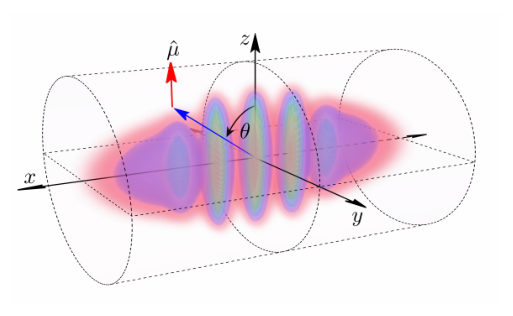
<figcaption class="paper-figure-caption"><b>Fig 1.</b> FIG. 1. Diagram of the system setup: The ground state den- sity for the supersolid phase with as = 90.9 a0 is shown, with the cylindrical geometry of the system highlighted. The mag- netic dipole moment is shown as ˆµ, oriented in the ˆz direction.</figcaption>
</figure>
<figure class="paper-figure-card">
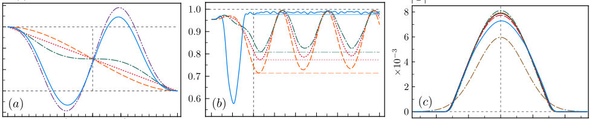
<figcaption class="paper-figure-caption"><b>Fig 2.</b> FIG. 2. Control within the superfluid regime: (a) Examples of as(t) for tf = 8: three polynomial control schemes defined in Eq. (20), a(1) s (t) (dotted-red), a(2) s (t) (dashed-orange), and a(3) s (t) (dot-dashed green), the VAIE scheme a(v) s (t) (solid blue) and the numerical optimized VAIE scheme a(vn) s (t) (dash-double-dot purple). (b) Plot of FT (t) for tf = 8 for the control schemes shown in (a). The vertical dashed-line at t = 8 denotes the control time tf, with as(t) = af s for t ≥tf. The horizontal lines for t ≥tf = 8 highlight the calculation of Fmin [Eq. (8)] for each control scheme. (c) Comparison of x-axis density slice of |Ψ|2</figcaption>
</figure>
<figure class="paper-figure-card">
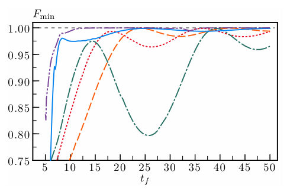
<figcaption class="paper-figure-caption"><b>Fig 3.</b> FIG. 3. Comparison of as(t) control schemes in the super- fluid regime: Fmin [Eq. (8)] versus different control times tf is calculated for the polynomial schemes, a(1) s (t) (dotted- red), a(2) s (t) (dashed-orange), a(3) s (t) (dot-dashed green), the VAIE scheme a(v) s (t) (solid blue) and the numerically opti- mized VAIE scheme (dash-double-dot purple).</figcaption>
</figure>
<figure class="paper-figure-card">
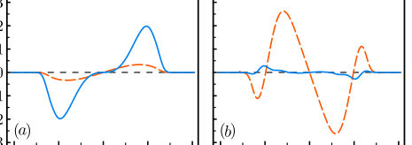
<figcaption class="paper-figure-caption"><b>Fig 4.</b> FIG. 4. Snapshots of jx(x, t) [Eq. (21)] with tf = 8, the poly- nomial scheme a(2) s (t) (dashed-orange) and the VAIE scheme a(v) s (t) (solid blue). (a) t = 4 and (b) t = tf demonstrate that a(v) s (t) produces an initially larger current density flow than a(2) s (t), and this flow is suppressed as t →tf and beyond, as shown in (b) at t = tf. This is in contrast to a(2) s (t), which initially has lower current density flow, but results in large oscillations in the current density for t ≥tf.</figcaption>
</figure>
<figure class="paper-figure-card">
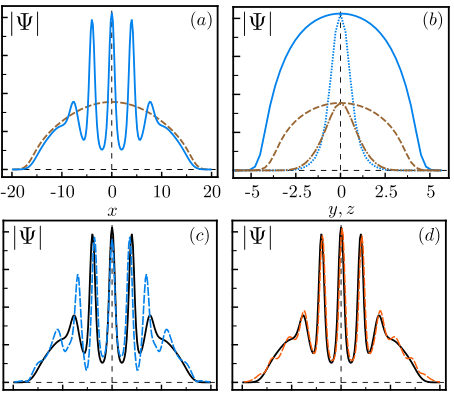
<figcaption class="paper-figure-caption"><b>Fig 5.</b> FIG. 5. (a)-(b) Axis density slices of the exact groundstates at initial and final as: (a) Numerical ground state x-axis density slices |Ψ(x, 0, 0)| for a0 s = 95.9 a0 (dashed-brown) and af s = 90.9 a0 (solid blue). Note that Fig. 1 is a 3D representation of the exact ground state at as = 90.9a0. (b) Numerical ground state y and z-axis density slices for a0 s = 95.9 a0, |Ψ(0, y, 0)| (dot-dashed brown) and |Ψ(0, 0, z)| (dashed brown), and for af s = 90.9 a0, |Ψ(0, y, 0)| (dotted-blue) and |Ψ(0, 0, z)| (solid blue).(c)-(d) Comparison of final-state x-axis density slice at t = tf = 45 with the exact ground state at af s = 90.9 a0 (solid- black): (c) Time-evolved state using polynomial scheme...</figcaption>
</figure>
</div>

<p><strong>Summary.</strong> The paper develops sophisticated time-dependent control protocols using Shortcuts to Adiabaticity techniques to manipulate dipolar Bose-Einstein condensates across their superfluid-to-supersolid phase transition. By employing variational and direct optimization methods, the authors design smooth changes in the scattering length that minimize excitations and maintain high fidelity throughout the process.</p>
<p><strong>Why it may be interesting.</strong> This work represents an advanced application of optimal control theory to highly interacting quantum many-body systems. The ability to precisely guide a system through a quantum phase transition while minimizing excitations is crucial for realizing novel quantum states in cold atom experiments.</p>
<details>
<summary>Detailed structure</summary>
<p><strong>Main problem.</strong> The primary goal is designing smooth time-dependent control protocols for dipolar Bose-Einstein condensates (BECs) to manage the transition between superfluid and supersolid phases while minimizing excitations.</p>
<p><strong>Main result.</strong> Variational approaches combined with direct numerical optimization successfully design control profiles, such as $a^{(
u)}<em _min="\min">s(t)$, that achieve high fidelity ($F</em> \gtrsim 0.95$) and suppress unwanted probability currents during the phase transition.</p>
<p><strong>Method.</strong> The study employs Shortcuts to Adiabaticity (STA) techniques, utilizing a variational approach with inverse engineering (VAIE) for superfluid regimes and direct optimization protocols for the challenging superfluid-supersolid transition.</p>
<p><strong>Model / system.</strong> The system is dipolar BECs, modeled by an extended Gross-Pitaevskii equation (eGPE). The Hamiltonian includes kinetic energy, external potential, long-range anisotropic dipole-dipole interaction (DDI), and tunable contact interactions. Control is exerted via the time-dependent s-wave scattering length, $a_s(t)$.</p>
<p><strong>Key observables.</strong> Time-dependent target-overlap fidelity ($F_T(t)$) and its minimum value ($F_{\min}$); probability density current ($\mathbf{j}_x(x, t)$); Inverse Participation Ratio (IPR).</p>
<p><strong>Important parameters / regimes.</strong> The critical scattering length $a_c$ that separates the superfluid and supersolid phases; the control time duration ($t_f$).</p>
<p><strong>Assumptions / limitations.</strong> The variational ansatz used in the VAIE method is assumed to be separable, which limits its accuracy near the phase transition. Spherical truncation of the dipole interaction was also considered.</p>
<p><strong>Figures summary.</strong> Figures compare current density snapshots ($\mathbf{j}_x$) showing flow suppression by optimized schemes versus oscillations from polynomial schemes; fidelity plots show $F_{\min}$ comparisons across various control protocols.</p>
<p><strong>Paper structure.</strong> The paper establishes the eGPE model, details the use of STA techniques, applies a variational approach for superfluid evolution, and then uses direct optimization to design robust controls specifically for crossing the superfluid-supersolid phase boundary.</p>
</details>
<details>
<summary>Abstract</summary>
<p>We consider protocols for control of dipolar Bose-Einstein condensates where the critical role is played by the long-range anisotropic interatomic magnetic dipole-dipole interaction. The phase diagram of such a condensate has been explored theoretically and experimentally with certain values of the interatomic scattering length corresponding to superfluid and supersolid phases, where supersolidity appears as a modulation in the ground state density. Preparation of this modulated ground state is challenging, since excitations appear as a result of a finite-time evolution required to produce qualitative changes in the wavefunction density. To solve this problem we consider the time-dependent control of a dipolar Bose-Einstein condensate using shortcuts to adiabaticity techniques, concentrating on design of the time-dependent scattering length, a parameter of the system easily tunable by contemporary experiments. The first technique is the variational approach based on the Euler-Lagrange equations for a separable ansatz describing the evolution of the superfluid state. Secondly, we study the transition from superfluid to supersolid using a direct optimization protocol. We discuss the fidelity of the developed protocols in terms of the evolution time.</p>
</details>
<p><sub><a href="#top">↑ back to top</a></sub></p>

<p><a id="paper-2606.20425"></a></p>
<h3 id="non-hermitian-skin-effect-enhances-pairing-correlations-in-moire-hubbard-systems"><a href="http://arxiv.org/abs/2606.20425v1">Non-Hermitian Skin Effect Enhances Pairing Correlations in Moiré Hubbard Systems</a></h3>
<p><strong>Authors:</strong> Yang Zhou, Jianwen Chen, Ruipeng Wei<br>
<strong>Type:</strong> theory · <strong>Category:</strong> strongly correlated electrons · <strong>PDF:</strong> <a href="https://arxiv.org/pdf/2606.20425v1">https://arxiv.org/pdf/2606.20425v1</a><br>
<strong>Analysis basis:</strong> full PDF text, analyzed in chunks
<strong>Topic relevance:</strong> 🔥 <code>analog quantum simulation</code> <strong>4/5</strong> · <code>methods for driven-dissipative</code> <strong>3/5</strong> · <code>driven-dissipative phase transition</code> <strong>2/5</strong> · <code>non-equilibrium universality</code> <strong>2/5</strong> · <code>Kondo &amp; dissipative impurity</code> <strong>1/5</strong> · <code>correlated / nonlocal dissipation</code> <strong>1/5</strong> · <code>entanglement &amp; information structure</code> <strong>1/5</strong> · <code>non-equilibrium dynamics</code> <strong>1/5</strong></p>
<div class="figure-strip-hint">↔ Scroll figures horizontally</div>
<div class="paper-figures-scroll">
<figure class="paper-figure-card">
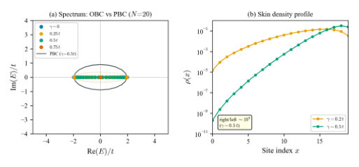
<figcaption class="paper-figure-caption"><b>Fig 1.</b> FIG. 2. (a) Complex energy spectrum of the Hatano-Nelson model (N = 20) under OBC (colored dots) and PBC (black arc, γ =0.5t) for increasing γ/t. The OBC spectrum collapses onto the real axis, distinct from the PBC complex arc. (b) Skin density profile ρ(x) on a logarithmic scale for two non- reciprocal couplings within the Hermiticity window (|γ| &lt; t), showing exponential accumulation with a right/left ratio exceeding 109 at γ = 0.5 t.</figcaption>
</figure>
<figure class="paper-figure-card">
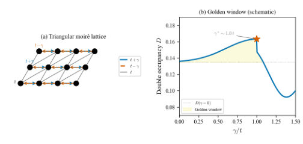
<figcaption class="paper-figure-caption"><b>Fig 2.</b> FIG. 1. (a) Triangular moir´e superlattice with non-reciprocal hopping. Right-hopping t+γ (solid blue) exceeds left-hopping t −γ (dashed red); other bonds retain t. (b) Schematic of the golden window: the double occupancy D(γ) rises to a peak at γ∗∼1.0 t (NHSE-induced LDOS amplification) then declines at stronger non-reciprocity (over-localization). The qualitative dome is established quantitatively in Fig. 3.</figcaption>
</figure>
<figure class="paper-figure-card">
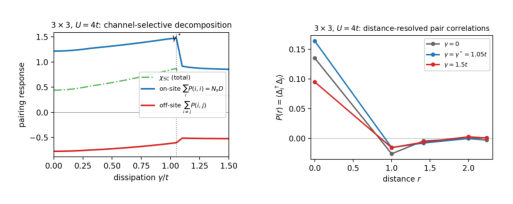
<figcaption class="paper-figure-caption"><b>Fig 3.</b> FIG. 4. (a) Decomposition of χSC(γ) on the 3 × 3 lattice at U = 4t: the on-site channel χon = NsD (blue) rises +21% while the negative off-site part χoff (AFM competition, red) shrinks 22% in magnitude; their sum (green dashed) grows +98%. (b) Distance-resolved P(r) = ⟨∆† i∆j⟩R: at γ∗= 1.05t the on-site component is enhanced while the negative nearest- neighbor component weakens (from −0.026 to −0.016), di- rectly exposing the pair-channel restructuring.</figcaption>
</figure>
<figure class="paper-figure-card">
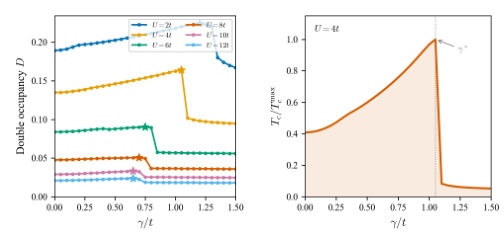
<figcaption class="paper-figure-caption"><b>Fig 4.</b> FIG. 3. (a) Double occupancy D(γ) at different U values from 3×3 ED. The golden window (non-monotonic peak) is present for all U ≥2t, with enhancement peaking at U = 4t (+21%). (b) BCS scaling estimate Tc(γ)/T max c at U = 4t, shown only as a qualitative fingerprint of the same pairing- response dome.</figcaption>
</figure>
<figure class="paper-figure-card">
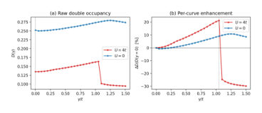
<figcaption class="paper-figure-caption"><b>Fig 5.</b> FIG. 5. (a) Raw D(γ) at U = 4t (red) and U = 0 (blue, single- particle baseline). (b) Per-curve enhancement ∆D/D(γ=0): correlations raise the peak from +10.9% to +21.3% and in- duce a sharp collapse at large γ absent from the U = 0 base- line, demonstrating a genuinely many-body golden window.</figcaption>
</figure>
</div>

<p><strong>Summary.</strong> The paper demonstrates that the Non-Hermitian Skin Effect can significantly enhance superconducting pairing correlations in moiré Hubbard systems. This enhancement occurs within a specific 'golden window' of non-reciprocity ($\gamma$), acting by selectively boosting on-site pairing while suppressing competing antiferromagnetic tendencies. The findings are robustly confirmed across multiple computational methods and suggest an experimentally measurable signature in driven quantum devices.</p>
<p><strong>Why it may be interesting.</strong> This work connects topological phenomena (NHSE) directly to strongly correlated physics (superconductivity), providing a mechanism where engineered boundary conditions can tune pairing interactions in quantum materials.</p>
<details>
<summary>Detailed structure</summary>
<p><strong>Main problem.</strong> Investigating whether the Non-Hermitian Skin Effect (NHSE) can enhance pairing correlations in Moiré Hubbard systems.</p>
<p><strong>Main result.</strong> The NHSE causes a non-monotonic enhancement of pairing susceptibility, peaking in an intermediate 'golden window' of non-reciprocity ($\gamma$), which is confirmed to be a genuine many-body effect.</p>
<p><strong>Method.</strong> Calculations utilize Exact Diagonalization (ED) and Non-Hermitian DMRG on the non-Hermitian Hubbard model. The results are cross-checked using BCS scaling estimates.</p>
<p><strong>Model / system.</strong> The system is electrons hopping on a triangular moiré superlattice described by the non-Hermitian Hubbard model, incorporating nearest-neighbor hopping ($t$), on-site repulsion ($U$), and an engineered asymmetric hopping term ($\gamma$) creating non-reciprocity.</p>
<p><strong>Key observables.</strong> Double occupancy $D(\gamma)$, pairing susceptibility $\chi_{SC}$ (decomposed into on-site/off-site), and the superconducting critical temperature $T_c(\gamma)$.</p>
<p><strong>Important parameters / regimes.</strong> Non-reciprocity parameter $\gamma$, interaction strength $U$ relative to hopping $t$, and the intermediate 'golden window' regime ($\gamma \in [0.5, 1.2]t$).</p>
<p><strong>Assumptions / limitations.</strong> The analysis focuses on finite clusters (e.g., $3	imes3$) and does not claim long-range superconducting order; the enhancement is shown to be a finite-cluster effect.</p>
<p><strong>Figures summary.</strong> Figures illustrate the non-monotonic dome shape of $D(\gamma)$ in the golden window, the channel-selective decomposition of $\chi_{SC}$ showing enhanced on-site pairing and suppressed AFM correlations, and predicted dome-shaped $T_c(\gamma)$ fingerprints.</p>
<p><strong>Paper structure.</strong> The paper establishes the physical model (NHSE in moiré systems), calculates key observables like $D(\gamma)$ and $\chi_{SC}$ using ED/DMRG, identifies the non-monotonic 'golden window' as a many-body effect, and predicts testable experimental signatures for coherent vs. dissipative driving.</p>
</details>
<details>
<summary>Abstract</summary>
<p>We show that the non-Hermitian skin effect (NHSE) can enhance pairing correlations in moiré Hubbard systems through a channel-selective mechanism: skin-induced localization amplifies the boundary density of states, strengthening local pairing tendencies within an intermediate ``golden window'' of non-reciprocity $γ\in[0.5,1.2]\,t$. Using exact diagonalization of the non-Hermitian Hubbard model on triangular lattices with open boundaries, we map the $(U,γ)$ phase diagram. The double occupancy $D(γ)$ exhibits non-monotonic behavior -- rising by up to 21\% then declining -- reflecting a competition between NHSE-enhanced boundary pairing and over-localization. A decomposition of the pairing susceptibility $χ_{\mathrm{SC}}$ on the $3\times3$ cluster reveals that the NHSE acts \emph{channel-selectively}: it enhances on-site pairing ($+21\%$) while simultaneously suppressing competing antiferromagnetic correlations (22\% reduction), so that the total pairing susceptibility, dominated by the on-site channel, grows by $+98\%$ on that cluster. These trends are corroborated by an independent non-Hermitian DMRG calculation and establish an enhancement of finite-cluster pairing correlations rather than trivial density redistribution. We do not claim long-range superconducting order. A BCS scaling estimate converts the same pairing-response signal into a dome-shaped $T_c(γ)$ fingerprint, suggesting an experimentally distinguishable response in coherent-drive versus reservoir-dominated moiré devices.</p>
</details>
<p><sub><a href="#top">↑ back to top</a></sub></p>

<p><a id="paper-2606.20160"></a></p>
<h3 id="multi-objective-design-of-photon-blockade-for-bright-single-photon-sources"><a href="http://arxiv.org/abs/2606.20160v1">Multi-objective design of photon blockade for bright single-photon sources</a></h3>
<p><strong>Authors:</strong> Sunkyu Yu, Xianji Piao, Namkyoo Park<br>
<strong>Type:</strong> theory · <strong>Category:</strong> other · <strong>PDF:</strong> <a href="https://arxiv.org/pdf/2606.20160v1">https://arxiv.org/pdf/2606.20160v1</a><br>
<strong>Analysis basis:</strong> full PDF text, analyzed in chunks
<strong>Topic relevance:</strong> 🔥 <code>methods for driven-dissipative</code> <strong>4/5</strong> · <code>correlated cavity matter</code> <strong>3/5</strong> · <code>analog quantum simulation</code> <strong>2/5</strong> · <code>correlated / nonlocal dissipation</code> <strong>2/5</strong> · <code>Keldysh / 2PI / non-Gaussian methods</code> <strong>1/5</strong> · <code>Tavis-Cummings &amp; cavity-many-emitter</code> <strong>1/5</strong> · <code>driven-dissipative phase transition</code> <strong>1/5</strong></p>
<div class="figure-strip-hint">↔ Scroll figures horizontally</div>
<div class="paper-figures-scroll">
<figure class="paper-figure-card">
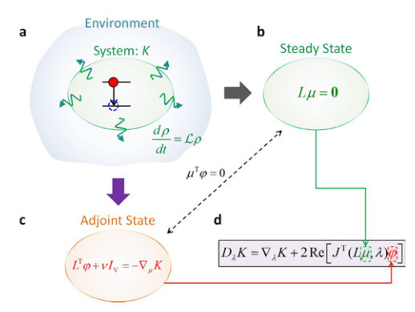
<figcaption class="paper-figure-caption"><b>Fig 1.</b> Fig. 1. Liouville-space adjoint method. a, Markovian open quantum system specified by L(λ)</figcaption>
</figure>
<figure class="paper-figure-card">
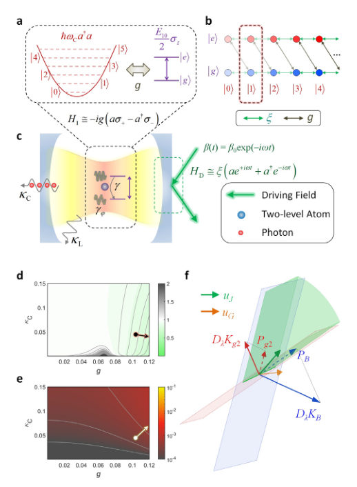
<figcaption class="paper-figure-caption"><b>Fig 2.</b> Fig. 2. Multi-objective optimization of an open JC single-photon source. a, JC coupling</figcaption>
</figure>
<figure class="paper-figure-card">
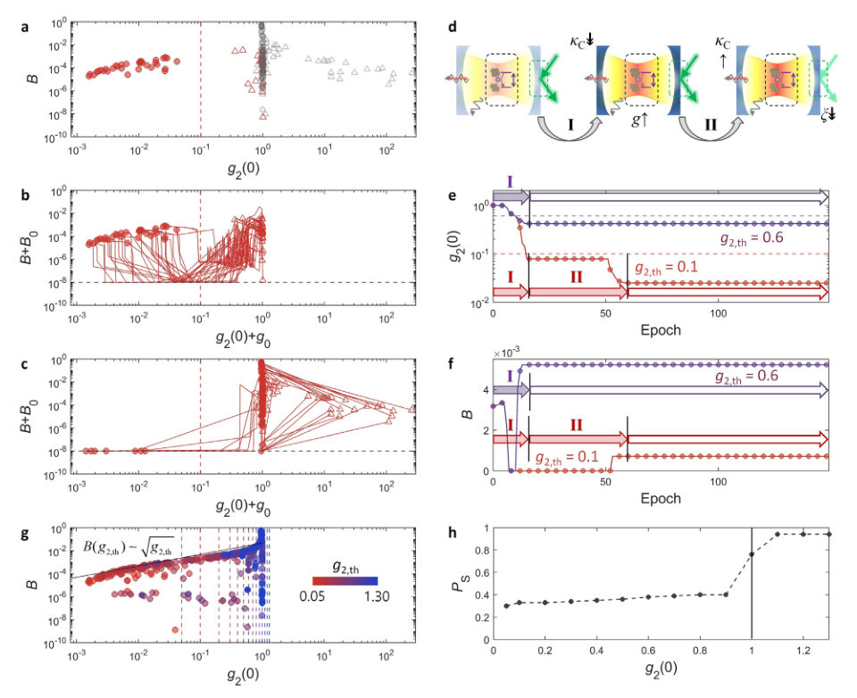
<figcaption class="paper-figure-caption"><b>Fig 3.</b> Fig. 3. Continuous transition toward high-quality single-photon sources. a, Initial (triangles)</figcaption>
</figure>
<figure class="paper-figure-card">
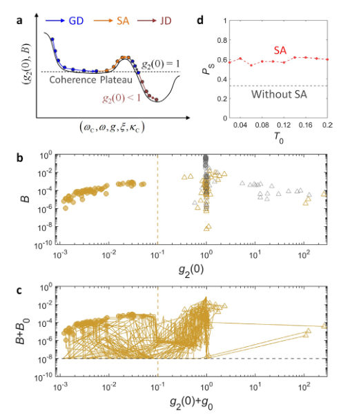
<figcaption class="paper-figure-caption"><b>Fig 4.</b> Fig. 4. Simulated-annealing-assisted optimization. a, Schematic of the optimization landscape,</figcaption>
</figure>
</div>

<p><strong>Summary.</strong> The paper presents a novel computational framework to solve the multi-objective optimization problem of designing high-performance single-photon sources. By combining Liouville-space adjoint methods with simulated annealing, the authors can navigate conflicting design requirements for purity and brightness in open quantum systems. This methodology offers a general tool for engineering complex quantum optical devices.</p>
<p><strong>Why it may be interesting.</strong> This work provides a general, computationally rigorous recipe for inverse design in open quantum systems, which is crucial for engineering complex quantum devices like single-photon emitters where multiple physical constraints must be satisfied simultaneously.</p>
<details>
<summary>Detailed structure</summary>
<p><strong>Main problem.</strong> The core challenge is designing high-quality single-photon sources by simultaneously optimizing conflicting performance metrics like purity ($g^{(2)}(0)$) and brightness ($B$).</p>
<p><strong>Main result.</strong> A computational framework combining Liouville-space adjoint methods with simulated annealing achieves a high success rate ($\approx 60\%$) for achieving low $g^{(2)}(0)$ while maintaining theoretically bounded brightness.</p>
<p><strong>Method.</strong> The authors developed an optimization routine using the Liouville-space adjoint formulation to efficiently calculate parameter gradients, augmented by simulated annealing to escape local minima in the multi-objective design landscape.</p>
<p><strong>Model / system.</strong> The study models single-photon sources using open quantum systems dynamics, specifically employing the Lindblad master equation applied to a cavity Quantum Electrodynamics (Cavity QED) setup described by the Jaynes-Cummings Hamiltonian.</p>
<p><strong>Key observables.</strong> Second-order correlation function ($g^{(2)}(0)$), photon outcoupling rate/Brightness ($B$), and system parameters like coupling strength ($g$) and decay rates ($\kappa_C, \gamma$).</p>
<p><strong>Important parameters / regimes.</strong> The optimization is performed over a multi-dimensional parameter space including cavity frequency ($\omega_C$), atomic transition frequency ($\omega$), coupling strength ($g$), etc.</p>
<p><strong>Assumptions / limitations.</strong> The analysis relies on the Lindblad master equation framework and employs advanced mathematical techniques like adjoint methods to handle complex gradient calculations in open quantum systems.</p>
<p><strong>Figures summary.</strong> Figures illustrate optimization landscapes showing conflicting gradients, successful two-stage transition trajectories (suppressing $g^{(2)}$ then recovering $B$), and the necessity of simulated annealing for high success probability.</p>
<p><strong>Paper structure.</strong> The paper introduces the physical problem, details the mathematical machinery (Liouville-space adjoint formulation), presents the multi-objective optimization strategy (Jacobian descent + SA), and validates the method using the JC model to achieve quantitative design results.</p>
</details>
<details>
<summary>Abstract</summary>
<p>High-quality single-photon sources, realized through saturable emitters, photon blockade, or heralded pair generation, are indispensable building blocks for photonic quantum platforms. Although these mechanisms suppress multiphoton emission through distinct principles typically captured by analytical models, their practical implementation is constrained by conflicting requirements for purity, brightness, and indistinguishability, which must be balanced within high-dimensional design landscapes. Here, we propose a computational framework for optimizing competing metrics of single-photon sources. Building on a Liouville-space adjoint formulation that efficiently evaluates multiple objectives in Markovian open quantum systems, we develop a Jacobian-based update, which ensures first-order monotonic reduction of multi-objective costs. By incorporating simulated annealing to escape gradient-vanishing plateaus, our framework achieves a design success rate of nearly 60 % for photon blockade with g2(0) smaller than 0.1 and theoretically bounded brightness across a broad parameter space, without any analytical guidance. This framework provides a general recipe for multi-objective design of open quantum systems.</p>
</details>
<p><sub><a href="#top">↑ back to top</a></sub></p>

<p><a id="paper-2606.19848"></a></p>
<h3 id="qmctwin-master-equation-simulation-of-syndrome-statistics-beyond-pauli-noise"><a href="http://arxiv.org/abs/2606.19848v1">QMCtwin: Master-Equation Simulation of Syndrome Statistics Beyond Pauli Noise</a></h3>
<p><strong>Authors:</strong> Tong Shen, Huo Chen, Benchen Huang, Tyler Takeshita, Arian Vezvaee, Izhar Medalsy, Daniel A. Lidar<br>
<strong>Type:</strong> theory · <strong>Category:</strong> quantum information and computing · <strong>PDF:</strong> <a href="https://arxiv.org/pdf/2606.19848v1">https://arxiv.org/pdf/2606.19848v1</a><br>
<strong>Analysis basis:</strong> full PDF text, analyzed in chunks
<strong>Topic relevance:</strong> 🔥 <code>methods for driven-dissipative</code> <strong>4/5</strong> · <code>correlated / nonlocal dissipation</code> <strong>3/5</strong> · <code>QC/QI experiment</code> <strong>2/5</strong> · <code>non-equilibrium dynamics</code> <strong>2/5</strong> · <code>Keldysh / 2PI / non-Gaussian methods</code> <strong>1/5</strong> · <code>driven-dissipative phase transition</code> <strong>1/5</strong> · <code>entanglement &amp; information structure</code> <strong>1/5</strong></p>
<div class="figure-strip-hint">↔ Scroll figures horizontally</div>
<div class="paper-figures-scroll">
<figure class="paper-figure-card">
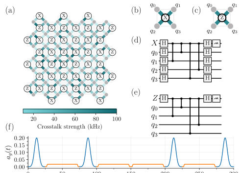
<figcaption class="paper-figure-caption"><b>Fig 1.</b> FIG. 1. Surface-code layout and syndrome-extraction circuits used in the distance-7 simulation. (a) Rotated surface-code layout with 49 data qubits (grey disks) and 48 measurement qubits (circles with X or Z). Measurement qubits are labeled by the stabilizer type they measure, X or Z, and edges indi- cate nearest-neighbor couplings Jij/2π; the color scale shows the sampled residual ZZ crosstalk strength. (b-c) Represen- tative four-body X- and Z-type stabilizer neighborhoods, re- spectively. (d-e) Gate schedules for measuring X- and Z-type stabilizers during the syndrome-extraction round. A box with an H denotes a Hadamard gate, and a solid vertical line with filled endpoints denotes a...</figcaption>
</figure>
<figure class="paper-figure-card">
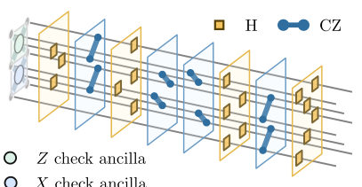
<figcaption class="paper-figure-caption"><b>Fig 2.</b> FIG. 2. Representative two-plaquette schedule used to con- struct the distance-7 syndrome-extraction round in the sim- ulation. The schedule is obtained by applying the X and Z checks in Fig. 1(d,e) across the layout in Fig. 1(a), with the single-qubit basis-change gates and the two-qubit entangling gates grouped into conflict-free layers.</figcaption>
</figure>
<figure class="paper-figure-card">
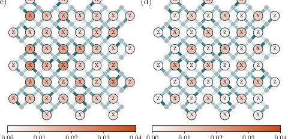
<figcaption class="paper-figure-caption"><b>Fig 3.</b> FIG. 4. Spatial distribution of (a),(b) syndrome-extraction bias and (c),(d) disagreement probability for the distance- 7 rotated surface code at ∆g = 0. For (a), (b), each la- beled measurement qubit is colored by the bias of its check. (a),(c) Realistic noise QMC simulation. (b),(d) Clifford sim- ulation using the noise parameters in Table I. For (c),(d), each measurement qubit is colored by p̸= k , the probability that the final ancilla readout disagrees with the correspond- ing data-stabilizer value. For X-type checks, the mean value is 1.16(±0.02)×10−2 in the QMC simulation and 1.03×10−2</figcaption>
</figure>
<figure class="paper-figure-card">
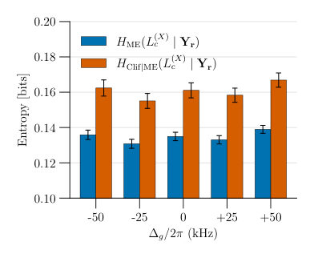
<figcaption class="paper-figure-caption"><b>Fig 4.</b> FIG. 6. Conditional string-parity uncertainty for ME simu- lations at various detunings compared with the fixed Pauli- twirled Stim predictor defined in Section IV. Blue bars show the ME conditional entropy HME(L(X) c | Yr), evaluated using ME row-patch syndrome weights and ME conditional string- parity probabilities. Orange bars show the cross entropy HClif|ME(L(X) c | Yr), obtained by using the ME conditional probabilities as the target distribution and the Stim condi- tional probabilities as the predictor. Bars are averaged over the same row-patch and horizontal-string pairs used in Fig. 5, and error bars are obtained by bootstrap resampling.</figcaption>
</figure>
<figure class="paper-figure-card">
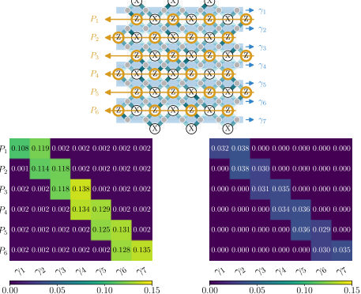
<figcaption class="paper-figure-caption"><b>Fig 5.</b> FIG. 5. Mutual information between local row patches of Z-type syndrome checks and representative logical- ¯Z string- parity proxies at ∆g = 0. (a) Schematic of the analysis. The six row patches P1, . . . , P6 each contain four Z-type syn- drome checks, and the seven horizontal data-string supports γ1, . . . , γ7 define minimum-weight representatives ¯Zγc of the logical- ¯Z operator. (b) Mutual information Iµ(L(X) c ; Yr) be- tween the four-bit row-patch syndrome variable Yr of row patch Pr and the corresponding −1 horizontal string-parity variable L(X) c . Values are computed from the QMC master- equation estimator (left) and from Stim samples using the Pauli-twirled stochastic noise model...</figcaption>
</figure>
</div>

<p><strong>Summary.</strong> The paper introduces QMCtwin, a quantum Monte Carlo simulation technique for solving the master equation of error-prone Quantum Error Correction (QEC) circuits. By simulating realistic superconducting noise sources, it demonstrates that standard Pauli noise models fail to capture crucial syndrome statistics. This provides a vital diagnostic tool for building more accurate decoders facing real-world hardware imperfections.</p>
<p><strong>Why it may be interesting.</strong> This work is highly relevant as it pushes beyond idealized noise models common in QEC theory by providing a rigorous computational tool to simulate complex, open-system dynamics that govern real hardware performance.</p>
<details>
<summary>Detailed structure</summary>
<p><strong>Main problem.</strong> Standard quantum error correction (QEC) simulations often inaccurately model hardware noise by using simplified stochastic Pauli models, discarding crucial coherent phase or nonunital drift information.</p>
<p><strong>Main result.</strong> The proposed QMCtwin framework successfully predicts syndrome-extraction biases and correlations that are entirely absent or strongly suppressed in conventional Pauli/Clifford noise descriptions.</p>
<p><strong>Method.</strong> The authors developed QMCtwin, a sign-problem-suppressed quantum Monte Carlo method to simulate the full master-equation dynamics of QEC circuits, comparing these results against standard Pauli-twirled Clifford simulations.</p>
<p><strong>Model / system.</strong> The study applies this framework to a distance-7 rotated surface code using 97 physical qubits, incorporating realistic superconducting noise mechanisms like relaxation, dephasing, and residual ZZ crosstalk into the master equation.</p>
<p><strong>Key observables.</strong> Syndrome probabilities ($\Pr(m)$), syndrome-extraction biases ($\delta_k$), disagreement probability ($p_{
eq k}$), and mutual information quantifying information loss between ME and Pauli models.</p>
<p><strong>Important parameters / regimes.</strong> Distance-7 surface code, 97 physical qubits, noise parameters ($T_1, T_\phi$, detuning $\Delta g/2\pi$), simulation time (300 ns).</p>
<p><strong>Assumptions / limitations.</strong> The QMC estimator is assumed to be unbiased and ergodic; the Pauli model approximation for noise sources is explicitly noted as an approximation of the full master-equation evolution.</p>
<p><strong>Figures summary.</strong> Figures illustrate the stability of the QMC estimator diagnostics (trace/phase) over time, and spatial maps comparing syndrome biases ($\delta_k$) and disagreement probabilities ($p_{
eq k}$) between the realistic ME simulation and the Pauli-twirled Clifford model.</p>
<p><strong>Paper structure.</strong> The paper first establishes the limitations of current noise models. It then details the QMCtwin master-equation solver, applies it to a full syndrome extraction round on a surface code, and finally uses information-theoretic diagnostics (like KL divergence) to quantify the structural differences between the two simulation approaches.</p>
</details>
<details>
<summary>Abstract</summary>
<p>As quantum error correction moves toward large-scale experimental implementations, decoder performance increasingly depends on how faithfully hardware noise is translated into syndrome statistics. Standard stabilizer workflows achieve scalability by replacing device dynamics with stochastic Pauli or detector-error models, but this compression can discard coherent phase information, nonunital drift, continuous-time effects of always-on couplings, and correlations generated by simultaneous Hamiltonian and dissipative evolution. Here we present QMCtwin, a sign-problem-suppressed quantum Monte Carlo framework for master-equation simulation of QEC circuits, and apply it to a full syndrome-extraction round of a distance-$7$ rotated surface code with $97$ physical qubits. The open-system model includes realistic superconducting-device noise mechanisms such as relaxation, pure dephasing, coherent gate miscalibration, residual $ZZ$ crosstalk, and drive-qubit detuning. By directly estimating syndrome observables from the QMC-generated stochastic density matrix estimator, we compare the master-equation dynamics with their Pauli-twirled Clifford simulation counterparts. QMCtwin predicts syndrome-extraction biases and correlations between syndromes and proxies of logical-string-parity that are absent or strongly suppressed in the stochastic Pauli description. We introduce information-theoretic diagnostics that further quantify how information concerning syndromes versus string-parity proxies differs between the realistic master-equation simulation and the corresponding Pauli-twirled model. These results show that QMC-based master-equation digital twins can expose noise features hidden by conventional Pauli/Clifford noise models and provide a practical path toward more accurate decoder-facing syndrome models.</p>
</details>
<p><sub><a href="#top">↑ back to top</a></sub></p>

<p><a id="paper-2606.19486"></a></p>
<h3 id="optimal-ansatz-free-hamiltonian-learning-in-situ"><a href="http://arxiv.org/abs/2606.19486v1">Optimal Ansatz-free Hamiltonian Learning In Situ</a></h3>
<p><strong>Authors:</strong> Taiqi Zhou, Weiyuan Gong<br>
<strong>Type:</strong> theory · <strong>Category:</strong> quantum information and computing · <strong>PDF:</strong> <a href="https://arxiv.org/pdf/2606.19486v1">https://arxiv.org/pdf/2606.19486v1</a><br>
<strong>Analysis basis:</strong> full PDF text, analyzed in chunks
<strong>Topic relevance:</strong> 🔥 <code>quantum measurements</code> <strong>4/5</strong> · <code>measurement-induced transitions</code> <strong>3/5</strong> · <code>QC/QI experiment</code> <strong>2/5</strong> · <code>analog quantum simulation</code> <strong>1/5</strong> · <code>methods for driven-dissipative</code> <strong>1/5</strong> · <code>non-equilibrium dynamics</code> <strong>1/5</strong></p>
<div class="figure-strip-hint">↔ Scroll figures horizontally</div>
<div class="paper-figures-scroll">
<figure class="paper-figure-card">
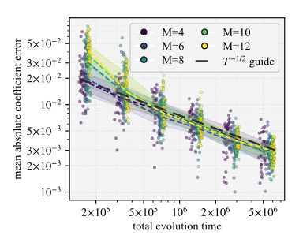
<figcaption class="paper-figure-caption"><b>Fig 1.</b> Figure 2: Mean absolute coefficient error versus total evolution time for Algorithm 3 in learning random ansatz-free sparse Hamiltonians (left) and random k-local Hamiltonians (right). The black dashed line is a T −1/2 guide.</figcaption>
</figure>
</div>

<p><strong>Summary.</strong> The paper presents an optimal, control-free algorithm to reconstruct the unknown Hamiltonian of a quantum system from limited measurement data. By establishing matching upper and lower bounds, it proves that the required total experimental time scales as $O(\Lambda/\epsilon^2 \log (\Lambda/\epsilon))$. This result is crucial for advancing in situ characterization techniques on near-term quantum hardware.</p>
<p><strong>Why it may be interesting.</strong> This work provides a rigorous, resource-optimal theoretical framework for characterizing quantum hardware parameters ($H$) using only basic, noise-resilient measurements available on current NISQ devices.</p>
<details>
<summary>Detailed structure</summary>
<p><strong>Main problem.</strong> The core problem is learning an unknown, potentially complex Hamiltonian ($H$) governing a quantum system solely from time-evolution measurements accessible in near-term quantum hardware.</p>
<p><strong>Main result.</strong> The authors derive the optimal scaling for total evolution time required for this task, establishing both an upper bound $O(rac{\Lambda}{\epsilon^2} \log rac{\Lambda}{\epsilon})$ and a matching lower bound $\Omega(rac{\Lambda}{\epsilon^2} \log rac{\Lambda}{\epsilon})$.</p>
<p><strong>Method.</strong> The methodology involves developing sequential measurement protocols: first, using random time sampling (displacement sieve) to identify the support of $H$, followed by cross-Pauli measurements and parity sampling to estimate the coefficients.</p>
<p><strong>Model / system.</strong> The system is an arbitrary quantum processor whose dynamics are governed by a Hamiltonian $H = \sum \lambda_u P_u$ in the Pauli basis. The focus is on implementing this learning process using only product state preparation and measurement (SPAM) access, mimicking near-term hardware constraints.</p>
<p><strong>Key observables.</strong> Correlation functions derived from time evolution, specifically second derivatives of same-Pauli measurements ($C''_{P_v}(0)$) for support finding, and first derivatives of cross-Pauli measurements ($(F^{(c)}_{A,B})'(0)$) for coefficient estimation.</p>
<p><strong>Important parameters / regimes.</strong> $\Lambda$ (Hamiltonian norm bound), $\epsilon$ (desired accuracy), $t_0$ (time resolution on a discrete grid).</p>
<p><strong>Assumptions / limitations.</strong> The protocol is analyzed under the assumption of local depolarization noise (SPAM errors) and relies heavily on mathematical tools like band-limited kernel sampling and summation rules for discretization.</p>
<p><strong>Figures summary.</strong> Not specified, but the notes detail algorithmic steps involving sieves, random sampling, and complexity scaling comparisons.</p>
<p><strong>Paper structure.</strong> The paper builds from continuous time analysis (using displacement/cross-correlation measurements) to discrete time analysis (applying summation rules), culminating in establishing optimal lower bounds for the total required measurement time $T_{tot}$.</p>
</details>
<details>
<summary>Abstract</summary>
<p>Characterizing the features of a Hamiltonian that governs a quantum system serves as a fundamental subroutine of quantum device calibration, signal sensing, and error correction. Recent works proposed protocols have achieved the optimal Heisenberg-limited scaling learning ansatz-free Hamiltonians from their real-time evolutions without fully specifying interaction structures. However, these protocols rely on both deep circuits with interleaving probes and control, and extremely short time resolution, making them difficult to implement on near- and intermediate-term in situ quantum experiments. In this work, we propose a computationally efficient, control-free, and ancilla-free algorithm that uses only Pauli product state preparation and measurement, and learns an ansatz-free Hamiltonian $H$ with $||H||\leqΛ$ in total evolution time of $Θ(\fracΛ{ε^2}\log(\fracΛε))$. The evolution time cost of our algorithm is optimal for any control-free protocols as we further prove a lower bound of $Ω(\fracΛ{ε^2}\log(\fracΛε))$. Technically, our method introduces a randomized-sampling framework that combines band-limited kernel-based time sampling with a displacement sieve for Hamiltonian structure learning. The characteristic probe time resolution depends only on $Λ$ instead of $\varepsilon$, which makes our protocol especially appealing in the high-precision regime for sensing and calibration applications. We also show that the algorithm maintains the same asymptotic total evolution time in the presence of state-preparation-and-measurement (SPAM) noise when the Hamiltonian is local after calibration. Our results demonstrate the fundamental cost of experimentally friendly Hamiltonian learning and provide a practical route to rigorous in situ characterization of near-term quantum platforms.</p>
</details>
<p><sub><a href="#top">↑ back to top</a></sub></p>

<p><a id="paper-2606.20145"></a></p>
<h3 id="trends-volatility-correlations-and-critical-phenomena-in-financial-markets"><a href="http://arxiv.org/abs/2606.20145v1">Trends, Volatility, Correlations, and Critical Phenomena in Financial Markets</a></h3>
<p><strong>Authors:</strong> Sara A. Safari, Christoph Schmidhuber<br>
<strong>Type:</strong> theory · <strong>Category:</strong> statistical mechanics · <strong>PDF:</strong> <a href="https://arxiv.org/pdf/2606.20145v1">https://arxiv.org/pdf/2606.20145v1</a><br>
<strong>Analysis basis:</strong> full PDF text, analyzed in chunks
<strong>Topic relevance:</strong> 🔥 <code>non-equilibrium universality</code> <strong>4/5</strong> · <code>driven-dissipative phase transition</code> <strong>3/5</strong> · <code>non-equilibrium dynamics</code> <strong>2/5</strong> · <code>Frenkel-Kontorova</code> <strong>1/5</strong> · <code>Keldysh / 2PI / non-Gaussian methods</code> <strong>1/5</strong> · <code>methods for driven-dissipative</code> <strong>1/5</strong></p>
<div class="figure-strip-hint">↔ Scroll figures horizontally</div>
<div class="paper-figures-scroll">
<figure class="paper-figure-card">
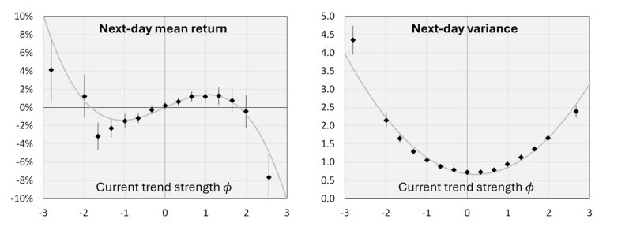
<figcaption class="paper-figure-caption"><b>Fig 1.</b> Figure 1: Left: The expectation value E(r) of tomorrow’s return in a futures market can</figcaption>
</figure>
<figure class="paper-figure-card">
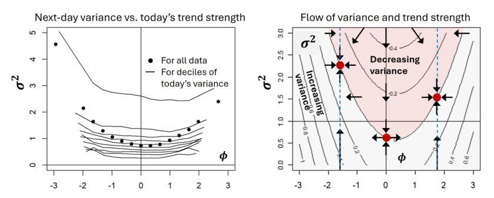
<figcaption class="paper-figure-caption"><b>Fig 2.</b> Figure 2: Left: Tomorrow’s variance as a function of today’s trend strength, both overall</figcaption>
</figure>
<figure class="paper-figure-card">
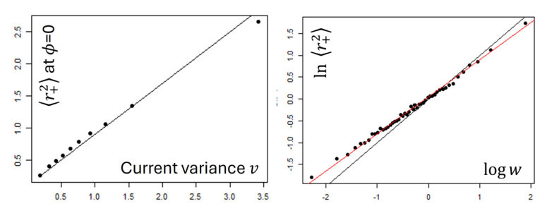
<figcaption class="paper-figure-caption"><b>Fig 3.</b> Figure 3: Left: The next day square-return appears to be almost linear in today’s variance.</figcaption>
</figure>
<figure class="paper-figure-card">

<figcaption class="paper-figure-caption"><b>Fig 4.</b> Fig. 3 (left) plots the average of tomorrow’s square return ⟨r2 t+1⟩(as an estimate of the</figcaption>
</figure>
<figure class="paper-figure-card">
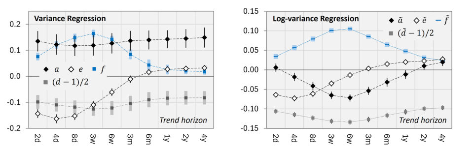
<figcaption class="paper-figure-caption"><b>Fig 5.</b> Figure 4: Left: coefficients of the regression of the variance as a function of the trend horizon</figcaption>
</figure>
</div>

<p><strong>Summary.</strong> This work models financial market dynamics by treating them through the lens of statistical mechanics, drawing parallels to lattice gas models near criticality. It quantifies how future volatilities and correlations depend non-linearly on current trends using regression techniques. The findings suggest that market risk can be significantly improved by incorporating these trend-dependent effects.</p>
<p><strong>Why it may be interesting.</strong> It provides a direct, quantitative mapping of complex financial time series behavior—such as volatility clustering and trend dependence—onto established concepts from statistical physics, like critical phenomena and phase transitions.</p>
<details>
<summary>Detailed structure</summary>
<p><strong>Main problem.</strong> The paper aims to develop a statistical-mechanical framework to model financial market dynamics by analyzing trends, volatility, and correlations.</p>
<p><strong>Main result.</strong> It finds that variance and correlation exhibit predictable non-linear dependencies on current market trends ($\phi_t$), suggesting the system behaves near a critical point.</p>
<p><strong>Method.</strong> The analysis uses nonlinear regression techniques (polynomial fitting) applied to historical financial return data, drawing analogies with lattice gas models near criticality.</p>
<p><strong>Model / system.</strong> The model treats financial markets as analogous to a lattice gas or an Ising-like system near its critical point. The dynamics are governed by potentials involving trend strength ($\phi$) and variance ($\sigma^2$), leading to equations for $\langle 	ext{r}^2_{t+1} 
angle$ and $
ho_{t+1}$.</p>
<p><strong>Key observables.</strong> Next-day volatility ($\langle 	ext{r}^2_{t+1} 
angle$), next-week correlation ($
ho_{t+1}$), trend strength ($\phi_t$), skewness, and kurtosis.</p>
<p><strong>Important parameters / regimes.</strong> Trend horizon ($T$), coefficients from polynomial fits (e.g., $f>0$ for variance growth, $g<1$ for mean reversion).</p>
<p><strong>Assumptions / limitations.</strong> The market dynamics can be effectively described by potentials derived from statistical physics models, such as the lattice gas model near criticality.</p>
<p><strong>Figures summary.</strong> Figures illustrate how expected return and variance change parabolically with trend strength ($\phi_t$), and contour plots show variance changes based on combinations of current variance and trend strength.</p>
<p><strong>Paper structure.</strong> The paper progresses from modeling returns (cubic polynomial) to modeling variance (quadratic polynomial in $\sigma^2_t$ and $\phi_t$) and finally to modeling correlations, culminating in the analogy with a lattice gas near its critical point.</p>
</details>
<details>
<summary>Abstract</summary>
<p>We forecast future volatilities and correlations of financial markets based on the current trends in these markets. This complements previous work that models future expected returns by a cubic polynomial of the current trend strength. Empirically, we observe that volatilities and correlations tend to increase day after day in times of strong up- or down-trends. This effect is particularly pronounced in down-trends. It can be accurately quantified by quadratic polynomials of today's trend strengths, which refine common mean-reversion models of volatilities and correlations. Our results improve the prediction of market risk by accounting for market trends. They also support a recent proposal to model financial markets by a lattice gas near its critical point.</p>
</details>
<p><sub><a href="#top">↑ back to top</a></sub></p>

<p><a id="paper-2606.20262"></a></p>
<h3 id="anomalous-magneto-optical-response-at-math313math-van-der-waals-interface"><a href="http://arxiv.org/abs/2606.20262v1">Anomalous magneto-optical response at $\mathrm{RuO_2 / WSe_2}$ van der Waals interface</a></h3>
<p><strong>Authors:</strong> Muhammad Hassan Shaikh, Abhijith Puthiya Veettil, Collin Maurtua, Dai Q. Ho, Subhash Bhatt, David T. Plouff, Malitha Gulawita, Kenji Watanabe, Takashi Taniguchi, John Q. Xiao, Anderson Janotti, Chitraleema Chakraborty<br>
<strong>Type:</strong> experiment · <strong>Category:</strong> other · <strong>PDF:</strong> <a href="https://arxiv.org/pdf/2606.20262v1">https://arxiv.org/pdf/2606.20262v1</a><br>
<strong>Analysis basis:</strong> full PDF text, analyzed in chunks
<strong>Topic relevance:</strong> 🔥 <code>spintronics-quantum-optics interface</code> <strong>4/5</strong> · <code>exotic spin models in light-matter</code> <strong>3/5</strong> · <code>quantum optics experiment</code> <strong>2/5</strong> · <code>Kondo &amp; dissipative impurity</code> <strong>1/5</strong> · <code>analog quantum simulation</code> <strong>1/5</strong></p>
<div class="figure-strip-hint">↔ Scroll figures horizontally</div>
<div class="paper-figures-scroll">
<figure class="paper-figure-card">
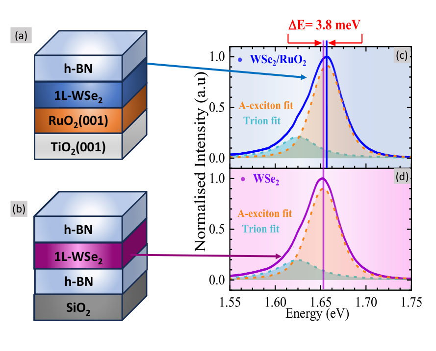
<figcaption class="paper-figure-caption"><b>Fig 1.</b> Figure 1: (a) Schematic of a heterostructure consisting of a monolayer WSe2 atop a RuO2 (001) film, with h-BN encapsulation on top, used for surface magnetism studies. (b) Schematic of the control sample: a monolayer WSe2 encapsulated by h-BN on both top and bottom. (c,d) Room-temperature PL spectra of monolayer WSe2 from the devices shown in (a) and (b), respectively. The dotted lines represent Lorentzian fits for A-excitons (yellow) and trions (cyan) used to extract peak energies. The peak energy of WSe2 atop RuO2 is blue-shifted by 3.8±0.1 meV compared to the encapsulated bare WSe2.</figcaption>
</figure>
<figure class="paper-figure-card">
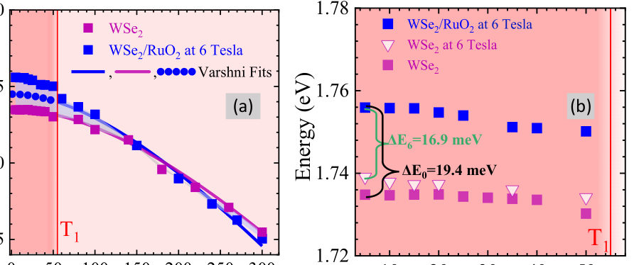
<figcaption class="paper-figure-caption"><b>Fig 2.</b> Figure 2: (a) Peak energy of WSe2 as a function of temperature. Blue squares represent the peak energy of WSe2 atop RuO2 in the presence of a 6 T out-of-plane magnetic field. Purple squares represent the peak energy of encapsulated WSe2 without any applied magnetic field. Solid lines are Varshni fits for encapsulated WSe2 (purple) and WSe2 atop RuO2 (blue). Encapsulated WSe2 peak energy follows the Varshni fit across the entire temperature range, while WSe2 atop RuO2 follows it until 55 K (T1). Beyond that, the Varshni behavior is shown by the blue dotted line. (b) Peak energy below T1 for WSe2 atop RuO2 in the presence of 6 T (blue squares), encapsulated WSe2 at 0 T (purple squares), and...</figcaption>
</figure>
<figure class="paper-figure-card">
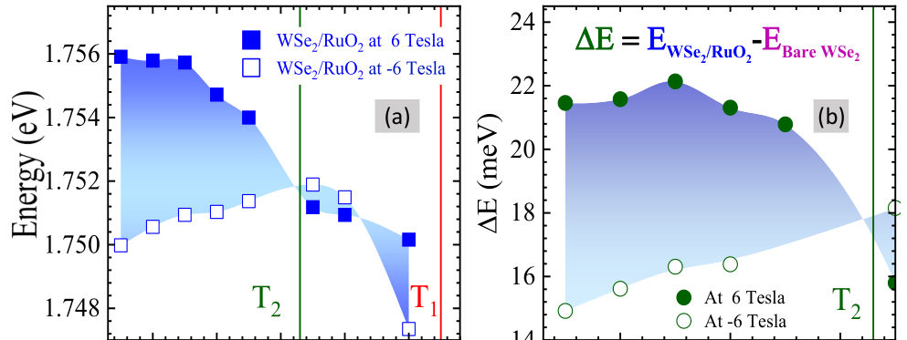
<figcaption class="paper-figure-caption"><b>Fig 3.</b> Figure 3: (a) Peak energy of WSe2 atop RuO2 as a function of temperature in the presence of ±6 T. The separation between the peak energies for positive and negative fields is minimal between 55 K (T1) and 33 K (T2), and increases below T2. (b) Magnitude of the energy difference between WSe2 atop RuO2 and encapsulated WSe2 as a function of temperature below T2 in the presence of ±6 T.</figcaption>
</figure>
<figure class="paper-figure-card">

<figcaption class="paper-figure-caption"><b>Fig 4.</b> Figure 4: (a), (b), and (c) show schematics of valley-specific transitions in WSe2 and a comparison between right-handed and left-handed emission energies (E(σ+) and E(σ−)) for magnetic fields greater than, equal to, and less than zero, respectively. (d) Valley splitting energy magnitude (δE) as a function of magnetic field for encapsulated WSe2 (blue diamonds) and WSe2 atop RuO2 (purple diamonds). The red line shows the linear fit for the Zeeman splitting behavior of encapsulated WSe2, from which the extracted g-factor was found to be 4.07 ± 0.24. The highlighted region shows the minimum and maximum fluctuation in energy splitting values in the WSe2/RuO2 heterostructure, and the mean value...</figcaption>
</figure>
</div>

<p><strong>Summary.</strong> The research investigates weak surface magnetism in $\mathrm{RuO_2}$ by studying its interaction with monolayer $\mathrm{WSe_2}$ using magneto-optical spectroscopy. Anomalous energy shifts and unique field responses observed below 55 K strongly suggest that the valley states are governed by interfacial magnetic exchange fields. This establishes a powerful, non-invasive optical tool for characterizing subtle magnetism in challenging material systems.</p>
<p><strong>Why it may be interesting.</strong> This work provides an optical method to probe weak magnetic interactions at interfaces without requiring the deposition of an additional ferromagnetic layer, which is highly relevant for understanding correlated electron systems in 2D heterostructures.</p>
<details>
<summary>Detailed structure</summary>
<p><strong>Main problem.</strong> The study aims to probe weak interfacial magnetic states at the surface of $\mathrm{RuO_2}$ using optical techniques, circumventing the controversy surrounding its bulk magnetic ground state.</p>
<p><strong>Main result.</strong> Anomalous magneto-optical responses, including temperature-dependent energy shifts and unusual valley splitting behavior in $\mathrm{WSe_2}$, were observed, suggesting that interfacial exchange fields govern the electronic structure via weak surface magnetism.</p>
<p><strong>Method.</strong> Temperature-dependent magneto-optical spectroscopy (magneto-photoluminescence) was performed on a van der Waals heterostructure ($\mathrm{WSe_2}$ atop $\mathrm{RuO_2}$) compared to an encapsulated control sample, using applied out-of-plane magnetic fields.</p>
<p><strong>Model / system.</strong> The physical system is the $\mathrm{WSe_2/RuO_2}$ van der Waals heterostructure. The investigation focuses on emergent surface magnetism in $\mathrm{RuO_2}$ and its influence on the excitonic states of monolayer $\mathrm{WSe_2}$.</p>
<p><strong>Key observables.</strong> Anomalous excitonic energy shift, deviation from Varshni behavior below 55 K, and field-dependent valley splitting ($\sigma^+$ vs. $\sigma^-$ polarization measurements).</p>
<p><strong>Important parameters / regimes.</strong> Temperature ($T < 55$ K), applied magnetic field (up to $\pm 6 	ext{ T}$ out-of-plane).</p>
<p><strong>Assumptions / limitations.</strong> The anomalous optical response is attributed to interfacial exchange fields associated with weak surface magnetic states in $\mathrm{RuO_2}$, rather than conventional Zeeman splitting or non-magnetic effects.</p>
<p><strong>Figures summary.</strong> Figures illustrate the temperature dependence of the excitonic peak energy, showing a deviation from Varshni behavior only in the $\mathrm{WSe_2/RuO_2}$ sample below $T_1$. They also show polarization-resolved measurements demonstrating negligible Zeeman splitting in the heterostructure compared to the control.</p>
<p><strong>Paper structure.</strong> The paper establishes the problem of probing weak surface magnetism, details the use of magneto-optical spectroscopy on the $\mathrm{WSe_2/RuO_2}$ system, presents evidence for anomalous temperature and field dependencies (deviation from Varshni behavior), and concludes by positioning this technique as a tool for studying emergent interfacial magnetism.</p>
</details>
<details>
<summary>Abstract</summary>
<p>Ruthenium dioxide ($\mathrm{RuO_2}$) has been proposed as an altermagnetic candidate, although its magnetic ground state remains controversial. Here, we probe weak interfacial magnetic states at the surface of (001)-oriented $\mathrm{RuO_2}$ films using the magnetic proximity effect (MPE) in a van der Waals heterostructure consisting of monolayer tungsten diselenide ($\mathrm{WSe_2}$) atop $\mathrm{RuO_2}$. Temperature-dependent magneto-optical spectroscopy reveals an anomalous excitonic energy shift and a deviation from conventional Varshni behavior below 55 K that are absent in an encapsulated $\mathrm{WSe_2}$ control sample. The anomalous shift reverses sign upon field cooling with opposite magnetic field polarity, indicating a magnetic origin. Polarization-resolved measurements further show a nearly field-independent and fluctuating valley splitting in $\mathrm{WSe_2 / RuO_2}$ in strong contrast to the conventional linear Zeeman splitting observed in the control bare $\mathrm{WSe_2}$ sample. These results suggest that the valley states are governed predominantly by interfacial exchange fields associated with weak surface magnetic states in $\mathrm{RuO_2}$, which do not produce a conventional linear Zeeman response within the applied magnetic field range. Importantly, this approach enables direct optical probing of emergent surface magnetism without introducing an additional ferromagnetic layer, positioning MPE-based optical probing as a tool for investigating weak surface magnetism and offering new possibilities for studying magnetic materials with controversial magnetic states.</p>
</details>
<p><sub><a href="#top">↑ back to top</a></sub></p>

<p><a id="paper-2606.20380"></a></p>
<h3 id="discrimination-of-genuinely-nonlocal-sets-without-entanglement-in-multipartite-systems"><a href="http://arxiv.org/abs/2606.20380v1">Discrimination of genuinely nonlocal sets without entanglement in multipartite systems</a></h3>
<p><strong>Authors:</strong> Ziying Hou, Huaqi Zhou, Limin Gao<br>
<strong>Type:</strong> theory · <strong>Category:</strong> quantum information and computing · <strong>PDF:</strong> <a href="https://arxiv.org/pdf/2606.20380v1">https://arxiv.org/pdf/2606.20380v1</a><br>
<strong>Analysis basis:</strong> full PDF text, analyzed in chunks
<strong>Topic relevance:</strong> 🔥 <code>entanglement &amp; information structure</code> <strong>4/5</strong> · <code>quantum measurements</code> <strong>3/5</strong> · <code>measurement-induced transitions</code> <strong>2/5</strong> · <code>correlated / nonlocal dissipation</code> <strong>1/5</strong> · <code>methods for driven-dissipative</code> <strong>1/5</strong></p>
<div class="figure-strip-hint">↔ Scroll figures horizontally</div>
<div class="paper-figures-scroll">
<figure class="paper-figure-card">

<figcaption class="paper-figure-caption"><b>Fig 1.</b> Low-resolution page preview, page 2</figcaption>
</figure>
<figure class="paper-figure-card">

<figcaption class="paper-figure-caption"><b>Fig 2.</b> Low-resolution page preview, page 3</figcaption>
</figure>
<figure class="paper-figure-card">

<figcaption class="paper-figure-caption"><b>Fig 3.</b> Low-resolution page preview, page 4</figcaption>
</figure>
<figure class="paper-figure-card">

<figcaption class="paper-figure-caption"><b>Fig 4.</b> Low-resolution page preview, page 5</figcaption>
</figure>
<figure class="paper-figure-card">

<figcaption class="paper-figure-caption"><b>Fig 5.</b> Low-resolution page preview, page 6</figcaption>
</figure>
</div>

<p><strong>Summary.</strong> This paper develops comprehensive protocols to distinguish between genuinely nonlocal sets of orthogonal product states in multipartite quantum systems. By classifying these sets into Type I and Type II based on local reducibility, the authors determine the minimal entanglement resources required for perfect discrimination. The results provide a general framework applicable from bipartite up to $n$-partite systems.</p>
<p><strong>Why it may be interesting.</strong> This work provides a rigorous theoretical framework for quantifying the minimum quantum resources needed to verify fundamental properties like genuine nonlocality, which is crucial for quantum cryptography and foundational tests of quantum mechanics.</p>
<details>
<summary>Detailed structure</summary>
<p><strong>Main problem.</strong> The paper addresses the challenge of perfectly discriminating between sets of quantum states that exhibit genuine nonlocality in multipartite systems.</p>
<p><strong>Main result.</strong> It establishes robust, resource-efficient protocols showing that discrimination requires minimal entanglement resources, such as a single EPR pair or GHZ state, depending on the type and dimensionality of the nonlocal set.</p>
<p><strong>Method.</strong> The core method involves constructing multi-step measurement sequences using local operations and classical communication (LOCC), supplemented by shared ancillary entangled states to overcome inherent nonlocality barriers.</p>
<p><strong>Model / system.</strong> The system consists of multipartite orthogonal product quantum states defined over tensor products of qudit spaces ($\mathbb{C}^{d_1} \otimes \cdots \otimes \mathbb{C}^{d_n}$). The sets are classified as Type I (reducible) or Type II (irreducible) based on local indistinguishability.</p>
<p><strong>Key observables.</strong> The outcomes of sequential local projective measurements ($M_k$) performed by different subsystems (Alice, Bob, Charlie) serve as the primary diagnostics for state identification.</p>
<p><strong>Important parameters / regimes.</strong> The required entanglement resources are key parameters, including single EPR pairs ($\vert\phi^+(2)
angle$), GHZ states ($\vert G(3)
angle$), and maximally entangled states in higher-dimensional systems.</p>
<p><strong>Assumptions / limitations.</strong> The protocols assume the existence of specific maximally entangled resource states and that the sets being discriminated are indeed genuinely nonlocal but locally distinguishable given sufficient entanglement assistance.</p>
<p><strong>Paper structure.</strong> The paper progresses by first defining genuine nonlocality, then presenting specialized discrimination schemes for low-dimensional bipartite systems (Type I/II), generalizing these protocols to tripartite and $n$-partite systems using increasing levels of shared entanglement resources.</p>
</details>
<details>
<summary>Abstract</summary>
<p>Genuine nonlocality arises when a set of multipartite orthogonal states is locally indistinguishable under any bipartition of the subsystems. The entanglement-assisted discrimination of such genuinely nonlocal orthogonal product sets has attracted significant attention in quantum information. Based on the criterion of local irreducibility, genuine nonlocality is classified into Type I (reducible) and Type II (irreducible). We present entanglement-assisted discrimination schemes for both types of genuinely nonlocal sets that use minimal resources. For low-dimensional cases, Type I sets require only a single EPR pair, whereas Type II sets necessitate only one GHZ state. We extend these protocols to higher-dimensional systems: the discrimination of Type I sets requires only one maximally entangled state in a two-qutrit system, while that of Type II sets similarly demands a single maximally entangled state in a three-qutrit system. For $n$-partite ($n > 3$) systems, Type I sets continue to require only one maximally entangled state, whereas Type II sets necessitate just one additional EPR pair compared to their Type I counterparts. These results provide a robust framework for the efficient discrimination of genuinely nonlocal sets using minimal quantum resources.</p>
</details>
<p><sub><a href="#top">↑ back to top</a></sub></p>

<p><a id="paper-2606.20396"></a></p>
<h3 id="faking-entanglement-with-imperceptible-measurement-deviations"><a href="http://arxiv.org/abs/2606.20396v1">Faking entanglement with imperceptible measurement deviations</a></h3>
<p><strong>Authors:</strong> Jaime Moreno, Elna Svegborn, Simon Morelli, Markus Hiekkamäaki, Lea Kopf, Robert Fickler, Armin Tavakoli<br>
<strong>Type:</strong> both · <strong>Category:</strong> quantum information and computing · <strong>PDF:</strong> <a href="https://arxiv.org/pdf/2606.20396v1">https://arxiv.org/pdf/2606.20396v1</a><br>
<strong>Analysis basis:</strong> full PDF text, analyzed in chunks
<strong>Topic relevance:</strong> 🔥 <code>entanglement &amp; information structure</code> <strong>4/5</strong> · <code>quantum measurements</code> <strong>3/5</strong> · <code>QC/QI experiment</code> <strong>2/5</strong> · <code>measurement-induced transitions</code> <strong>1/5</strong> · <code>quantum optics experiment</code> <strong>1/5</strong></p>
<div class="figure-strip-hint">↔ Scroll figures horizontally</div>
<div class="paper-figures-scroll">
<figure class="paper-figure-card">

<figcaption class="paper-figure-caption"><b>Fig 1.</b> Fig. 1: Falsely verified Schmidt number K as a function of: a) error for fixed dimension d ∈{10, 25, 50, 75, 100}, and b) dimension for fixed error ε ∈ {0.5%, 0.7%, 1%, 2%, 3%}. The gray dashed line in b) corresponds to the largest mean- ingful Schmidt number (K = d) under the idealized measurement assumptions. The cut-off at which the model reaches K = d is marked in both figures by vertical lines.</figcaption>
</figure>
<figure class="paper-figure-card">

<figcaption class="paper-figure-caption"><b>Fig 2.</b> Fig. 2: Illustrative schematic of the experimental setup employing the macro-pixel basis as the local dimension of a two-photon state and results for the average fidelity model across various ε-perturbations and dimensions. a) Diagram depicting the catego- rization of quantum states according to their entanglement class and the classification carried out by an entanglement witness, illustrated by the line delimiter, depending on the ε-perturbation. b) Individual states corresponding to the elements of a multi- outcome measurement for the unperturbed and ε-perturbed entanglement witness for ε = 0.7%. The ε-demons indicate the small perturbation introduced in the system by an attacker. c)...</figcaption>
</figure>
<figure class="paper-figure-card">

<figcaption class="paper-figure-caption"><b>Fig 3.</b> Fig. 3: Experimental results for the average fidelity model. a) scaling of the entan- glement witness with ε at a fixed local dimension d = 31. The red curve indicates the ideal theoretical model, whereas the orange curve shows the model after including a crosstalk ratio of Cr = 1 : 700. b) Scaling of the entanglement witness value with dimension for a fixed perturbation ε = 0.7%.</figcaption>
</figure>
</div>

<p><strong>Summary.</strong> The research reveals a fundamental vulnerability in high-dimensional entanglement detection: small, systematic measurement errors allow an attacker to trick verification protocols. By perturbing measurements on photonic spatial modes, the authors successfully demonstrated faking strong entanglement signals from simple product states. This mandates developing new, robust verification techniques resilient to bounded experimental discrepancies.</p>
<p><strong>Why it may be interesting.</strong> This work directly impacts the trustworthiness of quantum hardware characterization protocols, suggesting that device imperfections can be exploited to mislead users into believing a system possesses valuable entanglement resources.</p>
<details>
<summary>Detailed structure</summary>
<p><strong>Main problem.</strong> The paper demonstrates that arbitrarily small, adversarially encoded measurement errors can lead to the false certification of high-dimensional entanglement in systems that are fundamentally separable.</p>
<p><strong>Main result.</strong> Even with minor imperfections (e.g., 0.7% error), current entanglement verification methods fail spectacularly by falsely certifying significant levels of entanglement ($K$) for product states, especially as system dimensionality ($d$) increases.</p>
<p><strong>Method.</strong> The authors analyze the violation of an entanglement witness ($W_d$), showing that introducing $\epsilon$-perturbations to the measurement bases allows separable states to mimic the expected correlations of entangled states.</p>
<p><strong>Model / system.</strong> The study uses high-dimensional bipartite quantum states, experimentally realized using classical photonic states encoded in the spatial degree of freedom (macro-pixels). The theoretical framework relies on entanglement witnesses tested against product states.</p>
<p><strong>Key observables.</strong> Entanglement witness value ($W_d$), falsely certified Schmidt number ($K$), and the measurement error parameter ($\epsilon$).</p>
<p><strong>Important parameters / regimes.</strong> System dimension ($d$) up to 61, small perturbation $\epsilon$ (as low as 0.7%), and crosstalk ratios.</p>
<p><strong>Assumptions / limitations.</strong> The core assumption being challenged is that quantum measurements can be realized exactly; the analysis explores models based on average or worst-case fidelity approximations for measurement errors.</p>
<p><strong>Figures summary.</strong> Figures illustrate how the faked entanglement ($K$) scales with both the error ($\epsilon$) and the dimension ($d$), showing a rapid increase in vulnerability as $d$ grows.</p>
<p><strong>Paper structure.</strong> The paper develops theoretical models comparing different fidelity measures (average vs. worst-case) to quantify the attack, followed by detailed experimental implementation using photonic spatial modes to demonstrate the faking effect across increasing dimensions.</p>
</details>
<details>
<summary>Abstract</summary>
<p>Quantum entanglement is a central resource underpinning emerging quantum technologies, enabling capabilities beyond those of classical systems. Accurate verification of entanglement is therefore crucial. However, experimental schemes usually rely on the assumption that quantum measurements can be realized exactly. As the complexity of a quantum system grows, this assumption typically becomes increasingly unrealistic, therefore leading to a widening mismatch between theoretical models and experimental implementations. Here we demonstrate that arbitrarily small measurement errors, when adversarially encoded in the measurement apparatus, can lead to the false certification of high-dimensional entanglement in systems that are, in fact, separable. This is achieved by introducing explicit hacking attacks to measurement devices in well-established entanglement verification tests. We further experimentally demonstrate this effect using classical photonic states encoded in the spatial degree of freedom, spanning up to 61 dimensions with measurement fidelity errors as low as 0.23%. Our results uncover a fundamental vulnerability in current methods for high-dimensional entanglement detection, highlighting the susceptibility of complex quantum devices to small adversarial perturbations. The findings underscore the need for developing secure verification of quantum information that is robust to bounded discrepancies between theory and experiment.</p>
</details>
<p><sub><a href="#top">↑ back to top</a></sub></p>

<p><a id="paper-2606.20242"></a></p>
<h3 id="mitigating-trotter-errors-via-post-processed-symmetry-restoration"><a href="http://arxiv.org/abs/2606.20242v1">Mitigating Trotter Errors via Post-Processed Symmetry Restoration</a></h3>
<p><strong>Authors:</strong> Sangjin Lee, Sangkook Choi<br>
<strong>Type:</strong> theory · <strong>Category:</strong> strongly correlated electrons · <strong>PDF:</strong> <a href="https://arxiv.org/pdf/2606.20242v1">https://arxiv.org/pdf/2606.20242v1</a><br>
<strong>Analysis basis:</strong> full PDF text, analyzed in chunks
<strong>Topic relevance:</strong> 🔥 <code>analog quantum simulation</code> <strong>4/5</strong> · <code>quantum measurements</code> <strong>3/5</strong> · <code>measurement-induced transitions</code> <strong>2/5</strong> · <code>exotic spin models in light-matter</code> <strong>1/5</strong> · <code>non-equilibrium dynamics</code> <strong>1/5</strong></p>
<div class="figure-strip-hint">↔ Scroll figures horizontally</div>
<div class="paper-figures-scroll">
<figure class="paper-figure-card">

<figcaption class="paper-figure-caption"><b>Fig 1.</b> FIG. 1. Inconsistency of symmetry operations in quan- tum circuits. A physical symmetry of the Hamiltonian should be preserved during quantum simulation. However, some symmetries (here, a reflection symmetry R) are explic- itly broken when compiling the dynamics via Trotterization. These symmetry-violating contributions manifest as unphys- ical Trotter errors in the measurement outcomes.</figcaption>
</figure>
<figure class="paper-figure-card">

<figcaption class="paper-figure-caption"><b>Fig 2.</b> FIG. 2. Symmetry-mitigated results for the seven-site one- dimensional XY model. Yellow markers represent the expec- tation values obtained by the naive first-order Trotter simu- lation (V2), and green markers correspond to the symmetry- mitigated results using our post-processing protocol. Solid lines indicate polynomial fits. The naive Trotter error scales as O(t1.9), while the symmetry-mitigated error is drastically suppressed to O(t4.4).</figcaption>
</figure>
<figure class="paper-figure-card">

<figcaption class="paper-figure-caption"><b>Fig 3.</b> FIG. 3. Trotterized circuit for the 1D Schwinger model. Red circles and blue squares represent qubit-encoded matter and gauge degrees of freedom, respectively. The intermediate gauge transformation e−i ⃗ G·⃗a is inserted between two V2(t/2) Trotter layers to mitigate covariant errors.</figcaption>
</figure>
<figure class="paper-figure-card">

<figcaption class="paper-figure-caption"><b>Fig 4.</b> FIG. 4. Measurement of gauge violations ⟨Gi=1,2,3,4(t)⟩over time in the 1D Schwinger model. The results demonstrate that our intermediate gauge-twirling protocol systematically suppresses the unphysical gauge violations compared to the unmitigated Trotter circuit.</figcaption>
</figure>
</div>

<p><strong>Summary.</strong> The paper introduces a symmetry-based error mitigation protocol designed to counteract the symmetry-breaking errors inherent in Trotterized quantum simulations. By averaging measurement results over symmetry transformations—either at the initial state or between simulation layers—the method effectively filters out unphysical dynamics while preserving the true, ideal time evolution. This offers a powerful, depth-preserving tool for simulating complex condensed matter and gauge theories on current quantum hardware.</p>
<p><strong>Why it may be interesting.</strong> This is highly relevant as it provides a systematic, hardware-agnostic way to correct for fundamental algorithmic errors in quantum simulation that plague near-term devices, particularly when simulating lattice gauge theories or systems with known symmetries.</p>
<details>
<summary>Detailed structure</summary>
<p><strong>Main problem.</strong> Trotterization, used for quantum simulation, inherently breaks the symmetries of the target Hamiltonian, leading to unphysical algorithmic errors in simulating complex many-body systems.</p>
<p><strong>Main result.</strong> A symmetry-based post-processing protocol can systematically project out these symmetry-violating Trotter errors by averaging measurement outcomes over symmetry transformations. This provides a depth-preserving method to substantially improve simulation fidelity.</p>
<p><strong>Method.</strong> The core technique involves classical post-processing: either preparing the initial state in a symmetrically transformed basis or interleaving symmetry operations between discrete Trotter layers, followed by ensemble averaging of measurements.</p>
<p><strong>Model / system.</strong> The work applies to general quantum many-body systems, benchmarking on the one-dimensional XY model (spatial reflection symmetry) and the 1D Schwinger model (local gauge invariance). The underlying physics involves Hamiltonians with known symmetries that constrain the accessible Hilbert space.</p>
<p><strong>Key observables.</strong> Expectation values of physical observables $\langle O(t) 
angle$, specifically monitoring for violations of spatial reflection or local Gauss's law.</p>
<p><strong>Important parameters / regimes.</strong> The error scaling is compared between naive Trotterization (e.g., $O(t^{1.9})$) and the symmetry-mitigated protocol ($O(t^{4.4})$).</p>
<p><strong>Assumptions / limitations.</strong> The method assumes that the observable respects the underlying symmetries, allowing for projection onto symmetric subspaces; it is also shown to handle non-local or anti-unitary symmetries.</p>
<p><strong>Figures summary.</strong> Figures compare naive Trotter error scaling versus symmetry-mitigated error scaling for the XY model and illustrate the circuit structure involving gauge transformations interleaved between Trotter layers for the Schwinger model.</p>
<p><strong>Paper structure.</strong> The paper first establishes the problem of symmetry breaking in Trotterization, then details the post-processing protocol (initial state vs. interleaving), and finally benchmarks this method on specific models like the XY and Schwinger models to demonstrate error suppression.</p>
</details>
<details>
<summary>Abstract</summary>
<p>Quantum simulation is a powerful tool for exploring complex quantum many-body systems such as condensed matter physics and gauge theories. Trotterization, which approximates the ideal time evolution operator by decomposing it into a sequence of local gate operations, is one of the most widely used quantum simulation algorithms. However, such Trotterized implementations generally fail to preserve the symmetries of the target Hamiltonian during compilation. As a result, they can drive quantum states out of symmetrically allowed subspaces, leading to unphysical dynamics and symmetry-violating algorithmic errors. In this work, we propose a symmetry-based Trotter error mitigation protocol using classical post-processing. By applying symmetry transformations to the initial state or interleaving them between discrete Trotter layers, and then averaging an ensemble of the resulting measurement outcomes via classical post-processing, our method systematically projects out the symmetry-violating components of the Trotter error while leaving the ideal dynamics unchanged. Importantly, this framework naturally accommodates non-local spatial symmetries and anti-unitary operations such as time reversal, which are difficult or impossible to implement directly with hardware-native quantum gates. We benchmark our protocol on the one-dimensional XY model and the one-dimensional Schwinger model. In the XY model, enforcing reflection symmetry suppresses the leading-order Trotter error, whereas in the Schwinger model, interleaving gauge transformations between Trotter layers enables gauge-twirling effectively to reduce unphysical violations of local Gauss's law. These results demonstrate that symmetry-based post-processing provides a depth-preserving route to substantially improving the fidelity of Trotterized quantum simulations on near-term devices.</p>
</details>
<p><sub><a href="#top">↑ back to top</a></sub></p>

<p><a id="paper-2606.20123"></a></p>
<h3 id="qpu-scale-randomized-benchmarking-via-bell-pair-injection"><a href="http://arxiv.org/abs/2606.20123v1">QPU-scale randomized benchmarking via Bell-pair injection</a></h3>
<p><strong>Authors:</strong> Haripriya Pettugani, María Aguado-Yáñez, Astryd Park, Daniel Bultrini, James R. Wootton<br>
<strong>Type:</strong> both · <strong>Category:</strong> quantum information and computing · <strong>PDF:</strong> <a href="https://arxiv.org/pdf/2606.20123v1">https://arxiv.org/pdf/2606.20123v1</a><br>
<strong>Analysis basis:</strong> full PDF text, analyzed in chunks
<strong>Topic relevance:</strong> 🔥 <code>QC/QI experiment</code> <strong>4/5</strong> · 🔥 <code>entanglement &amp; information structure</code> <strong>4/5</strong> · <code>correlated / nonlocal dissipation</code> <strong>1/5</strong> · <code>methods for driven-dissipative</code> <strong>1/5</strong> · <code>non-equilibrium dynamics</code> <strong>1/5</strong></p>
<div class="figure-strip-hint">↔ Scroll figures horizontally</div>
<div class="paper-figures-scroll">
<figure class="paper-figure-card">

<figcaption class="paper-figure-caption"><b>Fig 1.</b> FIG. 1. MQA Circuit Structure. The yellow block highlights the additional structured layer (Rx(θ) on control qubits of the first entangling layer) inserted in the forward half. Except for the initial and final single-qubit Clifford layers (omitted), all other layers follow the standard MRB architecture.</figcaption>
</figure>
<figure class="paper-figure-card">

<figcaption class="paper-figure-caption"><b>Fig 2.</b> FIG. 2. Types of Edges. The yellow lines indicate qubit pairs that become entangled by the newly inserted MQA layer. Blue edges represent paired qubits, orange edges are the spectator qubits, and the remaining isolated edges are shown in green.</figcaption>
</figure>
<figure class="paper-figure-card">

<figcaption class="paper-figure-caption"><b>Fig 3.</b> FIG. 3. MMI for Custom Noisy Backend. Dependence of the Mean Mutual Information (MMI) on the initial entangling angle θ and entanglement density ξ for each edge type in an 8-qubit system, with p2 = 0.01, samples = 20 and shots = 10000. (a) θ = 0, ξ = 0.25. (b) θ = π/4, ξ = 0.25. (c) θ = π/2, ξ = 0.25. (d) θ = π/2, ξ = 1.</figcaption>
</figure>
<figure class="paper-figure-card">

<figcaption class="paper-figure-caption"><b>Fig 4.</b> FIG. 4. MMI for Stabilizer Backend. MQA simulations of 156 qubits on the ibm fez topology with p2 = 0.01, samples = 20 and shots = 10000. The initial entangling angle is fixed at θ = π/2, consistent with the stabilizer backend that allows only Clifford gates.</figcaption>
</figure>
<figure class="paper-figure-card">

<figcaption class="paper-figure-caption"><b>Fig 5.</b> FIG. 5. Isolated Pairs for Stabilizer Backend. MQA simulations of 156 qubits on the ibm fez topology for isolated pairs, showing the impact of depolarizing noise on the MMI evolution. The initial entangling angle is fixed at θ = π/2, with lengths = [2,4,10,14,20,30,50,100], samples = 20 and shots = 10000.</figcaption>
</figure>
</div>

<p><strong>Summary.</strong> The paper introduces Mirror Quantum Awesomeness (MQA), an advanced benchmarking technique combining MRB's global error estimation with QA's structural correlation analysis. By tracking per-edge mutual information, MQA provides a more detailed picture of noise accumulation than standard methods. The results validate this approach on large quantum processors, successfully locating a critical circuit depth where current error mitigation techniques are expected to fail.</p>
<p><strong>Why it may be interesting.</strong> This work provides advanced diagnostic tools that move beyond simple average gate fidelity measurements, offering insights into how structured correlations decay in large-scale quantum devices, which is crucial for understanding noise mechanisms relevant to AMO platforms like trapped ions or superconducting qubits.</p>
<details>
<summary>Detailed structure</summary>
<p><strong>Main problem.</strong> Developing comprehensive benchmarking techniques for large Quantum Processing Units (QPUs) to accurately quantify performance metrics beyond simple gate fidelities, especially in the presence of accumulating errors.</p>
<p><strong>Main result.</strong> The proposed Mirror Quantum Awesomeness (MQA) protocol successfully tracks per-edge correlation dynamics and locates a critical circuit depth ($\sim 50$ for ibm fez), offering two complementary methods to estimate device limitations.</p>
<p><strong>Method.</strong> The authors introduce MQA, a hybrid benchmarking protocol that integrates the structured entanglement analysis of Quantum Awesomeness (QA) into the established framework of Mirror Randomized Benchmarking (MRB). They use Mutual Information (MI) to quantify correlation degradation across varying circuit depths.</p>
<p><strong>Model / system.</strong> The work is demonstrated on physical 156-qubit processors (ibm fez, ibm kingston) and simulated using custom noisy backends. The analysis focuses on qubit connectivity graphs, particularly those admitting perfect matchings for topological variants.</p>
<p><strong>Key observables.</strong> Average entanglement infidelity ($\epsilon_{\Omega}$), Mutual Information (MI), Effective Polarization (EP), and the critical circuit depth where structured correlations decay due to noise.</p>
<p><strong>Important parameters / regimes.</strong> Circuit depth ($d$), initial entangling angle ($    heta$), two-qubit gate density ($\xi$), and hardware error rates ($p_1, p_2$).</p>
<p><strong>Assumptions / limitations.</strong> The topological variant (TMQA) assumes the coupling graph admits a perfect matching and is embeddable in two dimensions. For MQA analysis, parity-based measurement approximations are used.</p>
<p><strong>Figures summary.</strong> Figures illustrate MMI dependence on depth for different edge types (paired, spectator, isolated), compare EP decay between MRB and MQA across various backends, and show TMQA performance metrics ($P_{topo}, P_{pairs}$) vs. noise levels.</p>
<p><strong>Paper structure.</strong> The paper builds from standard MRB to the hybrid MQA protocol, introducing MI analysis for per-edge dynamics. It then extends this to Topological MQA (TMQA), which uses graph theory and decoding problems to find a second critical depth estimate, validating both on real hardware.</p>
</details>
<details>
<summary>Abstract</summary>
<p>Mirror randomized benchmarking (MRB) is an established technique that provides a global error metric at the scale of a whole QPU. To expand upon this we introduce Mirror Quantum Awesomeness (MQA), a hybrid protocol that adds a structured entangling layer to MRB circuits. This enables per-edge correlation dynamics to be tracked via mutual information while preserving the MRB infidelity estimate. The resulting analysis of the injected entangled pairs locates a critical circuit depth, beyond which rudimentary error mitigation techniques can be expected to fail. A topological variant, Topological MQA, supplies a second critical depth via a decoder based on the surface-code decoding problem. Both are validated in simulation and demonstrated on the 156-qubit \texttt{ibm_fez} and \texttt{ibm_kingston} processors, where MQA closely agrees with MRB on the entanglement infidelity and the critical depth for \texttt{ibm_fez} is found to be $\sim 50$.</p>
</details>
<p><sub><a href="#top">↑ back to top</a></sub></p>

<p><a id="paper-2606.20472"></a></p>
<h3 id="many-body-chirality-of-topological-stabilizer-states"><a href="http://arxiv.org/abs/2606.20472v1">Many-body chirality of topological stabilizer states</a></h3>
<p><strong>Authors:</strong> Tyler D. Ellison, Dongjin Lee, Zhi Li, Amin Moharramipour, Yasamin Panahi, Beni Yoshida<br>
<strong>Type:</strong> theory · <strong>Category:</strong> other · <strong>PDF:</strong> <a href="https://arxiv.org/pdf/2606.20472v1">https://arxiv.org/pdf/2606.20472v1</a><br>
<strong>Analysis basis:</strong> full PDF text, analyzed in chunks
<strong>Topic relevance:</strong> 🔥 <code>entanglement &amp; information structure</code> <strong>4/5</strong> · <code>analog quantum simulation</code> <strong>3/5</strong> · <code>correlated / nonlocal dissipation</code> <strong>1/5</strong> · <code>driven-dissipative phase transition</code> <strong>1/5</strong> · <code>exotic spin models in light-matter</code> <strong>1/5</strong></p>
<div class="figure-strip-hint">↔ Scroll figures horizontally</div>
<div class="paper-figures-scroll">
<figure class="paper-figure-card">

<figcaption class="paper-figure-caption"><b>Fig 1.</b> Figure 2: Construction of string operators M1, M2, M3 for T-junction.</figcaption>
</figure>
<figure class="paper-figure-card">

<figcaption class="paper-figure-caption"><b>Fig 2.</b> Figure 3: In the canonical purification picture, the two states |˜Φ⟩≡( e N ⊗I)|Ψρ⟩and |Φ⟩≡ (M ⊗I)|Ψρ⟩coincide on (LR)c.</figcaption>
</figure>
<figure class="paper-figure-card">

<figcaption class="paper-figure-caption"><b>Fig 3.</b> Figure 4: The system is divided into four subsystems L, KL, KR, R in the canonical purification picture. Here, L (R) is decoupled from KRR (KLL).</figcaption>
</figure>
<figure class="paper-figure-card">

<figcaption class="paper-figure-caption"><b>Fig 4.</b> Figure 5: Concentrating anyons in the T-junction.</figcaption>
</figure>
<figure class="paper-figure-card">

<figcaption class="paper-figure-caption"><b>Fig 5.</b> Figure 6: Four-partite subsystems ABCD. The surrounding region E may be empty.</figcaption>
</figure>
</div>

<p><strong>Summary.</strong> The paper introduces a rigorous concept of 'many-body chirality' by defining it as an obstruction to transforming a quantum state into its complex conjugate via local operations. It proves this diagnostic is sensitive to the underlying anyon theory's mirror symmetry, revealing forms of chirality invisible to standard entanglement measures like the modular commutator.</p>
<p><strong>Why it may be interesting.</strong> This work provides powerful, non-local diagnostics (like 4-partite chirality) for topological order that are robust against local noise or simple entanglement measures, which is crucial for understanding fault-tolerant quantum computation.</p>
<details>
<summary>Detailed structure</summary>
<p><strong>Main problem.</strong> The primary goal is to develop a quantum information theoretic characterization of chirality in many-body quantum states, moving beyond insufficient diagnostics like the modular commutator.</p>
<p><strong>Main result.</strong> LO-chirality for $Z(k)_d$ stabilizer theories is equivalent to the underlying anyon data being mirror invariant, and this obstruction is intrinsically four-partite. Furthermore, these systems exhibit intrinsic 'imaginarity' if $d>2$.</p>
<p><strong>Method.</strong> The authors introduce LO-chirality as an obstruction to transforming a state into its complex conjugate via local operations (LO), contrasting it with conventional entanglement measures.</p>
<p><strong>Model / system.</strong> The analysis focuses on topological phases realized by abelian anyons, specifically $Z(k)_d$ stabilizer mixed and pure states, often modeled on lattices like the honeycomb lattice.</p>
<p><strong>Key observables.</strong> LO-chirality, LU-imaginarity (intrinsic complex phase structure), four-partite entanglement measures, and the chiral central charge ($c_-$).</p>
<p><strong>Important parameters / regimes.</strong> The anyon level $d$ (especially $d>2$), the number of parties involved in chirality detection (four-partite vs. tripartite), and the nature of local operations (LO vs. LU).</p>
<p><strong>Assumptions / limitations.</strong> The analysis relies on establishing equivalences between different notions of chirality (e.g., LO-chirality $\iff$ four-partite chirality) for specific model classes.</p>
<p><strong>Figures summary.</strong> Not specified, but the notes suggest comparisons in tables summarizing various topological models against multiple chirality diagnostics ($c^-$, LO chiral, Four-partite chiral).</p>
<p><strong>Paper structure.</strong> The paper develops concepts sequentially: first defining LO-chirality and linking it to mirror invariance for $Z(k)_d$ theories; then establishing the four-partite nature of this obstruction; subsequently introducing LU-imaginarity as a deeper resource property; and finally applying these tools to analyze specific lattice realizations.</p>
</details>
<details>
<summary>Abstract</summary>
<p>A defining feature of chirality is the distinction between a system and its mirror image. Despite extensive experimental observations of chiral phases and theoretical advances, a quantum-information theoretic characterization of chirality based solely on the entanglement structure of many-body quantum states remains elusive. Here, we introduce the notion of many-body chirality by formulating it as an obstruction to transforming a quantum state into its complex conjugate through finite-depth local operations. We rigorously establish many-body chirality for stabilizer realizations of $\mathbb{Z}_d^{(k)}$ anyon theories, proving that complex conjugation can be implemented by local quantum channels if and only if the underlying anyon data are mirror invariant. This reveals forms of chirality that evade conventional diagnostics, including examples with vanishing modular commutator, vanishing chiral central charge, and commuting-projector realizations. We further show that this obstruction is intrinsically four-partite, while invisible to tripartite entanglement structure. Finally, we prove that $\mathbb{Z}_d^{(k)}$ states with $d>2$ possess intrinsic many-body imaginarity: their complex phase structure cannot be removed by finite-depth local unitaries. Remarkably, this includes states that are not many-body chiral.</p>
</details>
<p><sub><a href="#top">↑ back to top</a></sub></p>

<p><a id="paper-2606.20192"></a></p>
<h3 id="optimal-multi-spectral-squeezing-via-deterministic-2d-phase-optimization"><a href="http://arxiv.org/abs/2606.20192v1">Optimal multi-spectral squeezing via deterministic 2D-phase optimization</a></h3>
<p><strong>Authors:</strong> Bastien Oriot, Peter Namdar, Emilie Gillet, RL Rincon Celis, Valentina Parigi<br>
<strong>Type:</strong> experiment · <strong>Category:</strong> quantum information and computing · <strong>PDF:</strong> <a href="https://arxiv.org/pdf/2606.20192v1">https://arxiv.org/pdf/2606.20192v1</a><br>
<strong>Analysis basis:</strong> full PDF text, analyzed in chunks
<strong>Topic relevance:</strong> 🔥 <code>quantum optics experiment</code> <strong>4/5</strong> · <code>interference shaping light</code> <strong>3/5</strong> · <code>quantum measurements</code> <strong>2/5</strong> · <code>QC/QI experiment</code> <strong>1/5</strong></p>
<div class="figure-strip-hint">↔ Scroll figures horizontally</div>
<div class="paper-figures-scroll">
<figure class="paper-figure-card">

<figcaption class="paper-figure-caption"><b>Fig 1.</b> FIG. 1. Visual representation of the algorithm. Only the op- timization of the first two pixels is shown. The purple pixel in the middle is the reference pixel; the white pixels are the ones reflected out and filtered in the Fourier plane. On the right is represented the contribution of each pixel to the inter- ference signal while the phase between the LO and the seed is scanned.</figcaption>
</figure>
<figure class="paper-figure-card">

<figcaption class="paper-figure-caption"><b>Fig 2.</b> FIG. 3. Scheme of the experimental setup. The second har- monic of the femtosecond laser pumps a ppKTP crystal for squeezing generation. A second portion of the main laser is spectrally shaped and spatially optimized to serve as the local oscillator in homodyne detection. When squeezing is measured, the seed path is blocked. For spatial phase opti- mization of the LO, the 780 nm beam is blocked while the seed is used to mimic the quantum signal. To maximize its overlap with the LO, a photodiode is placed at the beam splitter (BS) output to monitor the interference fringes.</figcaption>
</figure>
<figure class="paper-figure-card">

<figcaption class="paper-figure-caption"><b>Fig 3.</b> FIG. 5. Obtained phase map; the non-hatched portion shows where the beam is physically on the screen.</figcaption>
</figure>
<figure class="paper-figure-card">

<figcaption class="paper-figure-caption"><b>Fig 4.</b> FIG. 6. Measurement of squeezing with and without the adaptive mask.</figcaption>
</figure>
</div>

<p><strong>Summary.</strong> The paper presents a deterministic algorithm to optimize the spatial phase mask applied to a local oscillator beam in waveguide-based quantum optics experiments. By treating the visibility as a sum of pixel contributions, they achieve superior mode overlap compared to previous methods. This optimization directly translates into measurable improvements in multi-spectral squeezing levels, advancing practical quantum measurement techniques.</p>
<p><strong>Why it may be interesting.</strong> This work provides an interpretable, physically grounded methodology to enhance quantum state measurements (squeezing) in integrated photonic platforms by deterministically controlling spatial mode matching, which is crucial for scaling quantum technologies.</p>
<details>
<summary>Detailed structure</summary>
<p><strong>Main problem.</strong> The primary goal is optimizing multi-spectral squeezing for quantum protocols by maximizing the mode overlap efficiency between a local oscillator (LO) beam and the quantum signal beam.</p>
<p><strong>Main result.</strong> A deterministic phase shaping algorithm increased the measured visibility from 76% to 84%, leading to a quantifiable improvement in quantum readout, specifically increasing squeezing from -2.08 dB to -2.64 dB.</p>
<p><strong>Method.</strong> The authors developed and implemented a deterministic sequential optimization algorithm that treats the problem as maximizing the sum of contributions from individual spatial pixels on an SLM mask.</p>
<p><strong>Model / system.</strong> The experiment uses a waveguide-based setup employing homodyne detection to measure squeezing. The LO's spatial profile is shaped using a Spatial Light Modulator (SLM) whose pixel phases are optimized relative to a reference pixel.</p>
<p><strong>Key observables.</strong> Visibility ($V$), Mode Overlap Efficiency ($\eta_{mod}$), and Squeezing level (measured in dB).</p>
<p><strong>Important parameters / regimes.</strong> The optimization scales linearly with the number of pixels, providing an efficient alternative to black-box machine learning techniques.</p>
<p><strong>Assumptions / limitations.</strong> The visibility function is assumed to decompose additively across individual pixel contributions, allowing for sequential single-parameter optimization.</p>
<p><strong>Figures summary.</strong> Figures illustrate the algorithm flow (sequential phase optimization), the experimental setup involving LO shaping on an SLM, and comparisons of measured squeezing with and without the adaptive mask.</p>
<p><strong>Paper structure.</strong> The paper introduces the problem of mode overlap in homodyne detection, details the theoretical decomposition of visibility into pixel contributions, presents the novel deterministic sequential algorithm for phase optimization, validates this method experimentally using a waveguide setup, and concludes by quantifying the resulting quantum enhancement.</p>
</details>
<details>
<summary>Abstract</summary>
<p>Optimization routines are ubiquitous in quantum information technologies and essential to reach the resource levels required by quantum protocols. Specifically, multi-spectral squeezing for use in such protocols requires that losses be kept minimal at every stage, including coherent detection, which is performed by interfering the signal with a classical local-oscillator beam. This in turn requires control over all optical degrees of freedom of the beam in order to optimize the detection. The most general framework for this optimization relies on agnostic, off-the-shelf machine-learning techniques. Here we take the opposite approach: by focusing on a physical description of the specific optical process, we develop a deterministic sequential algorithm that provably reaches the global maximum of the visibility in a pixel basis and scales linearly with the number of pixels, thereby offering an efficient and theoretically grounded alternative to black-box optimization. In our waveguide-based setup, the optimized mask increases the visibility from 76% to 84%, corresponding to a 20% gain in mode-matching efficiency. Multi-spectral squeezing measurements confirm that this improvement translates directly into quantum readout: for the most squeezed spectral mode, the squeezing increases from $-2.08$ dB to $-2.64$ dB, consistent with the inferred efficiency gain. These results establish deterministic spatial phase shaping as an effective, interpretable route to enhanced multimode squeezing in waveguide platforms.</p>
</details>
<p><sub><a href="#top">↑ back to top</a></sub></p>

<p><a id="paper-2606.19585"></a></p>
<h3 id="electrical-noise-produced-by-micron-sized-particles-above-a-surface-paul-trap"><a href="http://arxiv.org/abs/2606.19585v1">Electrical Noise Produced by Micron-Sized Particles above a Surface Paul Trap</a></h3>
<p><strong>Authors:</strong> Ben Saarel, Ozgur Sahin, Hartmut Häffner, Alpha T. N'Diaye<br>
<strong>Type:</strong> experiment · <strong>Category:</strong> other · <strong>PDF:</strong> <a href="https://arxiv.org/pdf/2606.19585v1">https://arxiv.org/pdf/2606.19585v1</a><br>
<strong>Analysis basis:</strong> full PDF text, analyzed in chunks
<strong>Topic relevance:</strong> 🔥 <code>QC/QI experiment</code> <strong>4/5</strong> · <code>Keldysh / 2PI / non-Gaussian methods</code> <strong>1/5</strong> · <code>correlated / nonlocal dissipation</code> <strong>1/5</strong> · <code>driven-dissipative phase transition</code> <strong>1/5</strong> · <code>methods for driven-dissipative</code> <strong>1/5</strong></p>
<div class="figure-strip-hint">↔ Scroll figures horizontally</div>
<div class="paper-figures-scroll">
<figure class="paper-figure-card">

<figcaption class="paper-figure-caption"><b>Fig 1.</b> FIG. 1. Trap fabrication and layout. (a) Microscope image of the trap after fabrication. (b) Schematic of the metal layers deposited onto the fused silica substrate.</figcaption>
</figure>
<figure class="paper-figure-card">

<figcaption class="paper-figure-caption"><b>Fig 2.</b> Fig. 2 displays the measured heating rates for ω = 2π × 1 MHz at various trapping locations along the length of the trap. For positions L1-L3, the heating rates remain constant at ≈200quanta/s. For positions L3-L7, the heating rate depends strongly on the trapping location z. The maximum heating rate we measure is 77000(7000) quanta/s at location L6. Fig. 3 shows the scaling of the heating rate with motional frequency ω at selected locations along the trap. We fit Eq. 4 to determine the power-law noise exponent α; the best-fit curves are plotted in Fig. 3 and the fit parameters are displayed in Table I.</figcaption>
</figure>
<figure class="paper-figure-card">

<figcaption class="paper-figure-caption"><b>Fig 3.</b> FIG. 2. Heating rates measured at different z-locations along the trap. All heating rates are taken at a motional frequency ω = 2π ×1MHz.</figcaption>
</figure>
<figure class="paper-figure-card">

<figcaption class="paper-figure-caption"><b>Fig 4.</b> FIG. 3. Frequency dependence of the heating rates at trapping loca- tions L1, L2, L4, and L7. We fit Eq. 4 to the data and plot the best-fit curves in the figure.</figcaption>
</figure>
<figure class="paper-figure-card">

<figcaption class="paper-figure-caption"><b>Fig 5.</b> FIG. 4. Defect images. (a) Microscope image of the trap immediately after fabrication and prior to heating rate measurements. (b) Low- magnification SEM image of the trap taken after heating rate measurements. (c) CCD camera image of the trap taken during heating rate measurements, with point defects p1 and p2 illuminated by a grazing-incidence laser beam. (d) High-magnification SEM image of the trap taken after heating rate measurements. The two largest particles are labeled p1 and p2 and correspond to the point defects in the CCD camera image. Smaller particles are indicated by arrows.</figcaption>
</figure>
</div>

<p><strong>Summary.</strong> The researchers investigated electric field noise limiting quantum operations in a surface Paul trap. They found that the noise is strongly correlated with micron-sized particles on the electrode surface. By modeling these particles as lossy dielectrics, they successfully explained the magnitude and frequency dependence of the measured noise, offering a key insight into improving ion trap fidelity.</p>
<p><strong>Why it may be interesting.</strong> This work provides crucial experimental grounding for open quantum system modeling in trapped ions. By quantifying environmental noise sources (surface defects) using established electromagnetic theory, it helps refine decoherence models essential for scaling up ion-trap quantum computers.</p>
<details>
<summary>Detailed structure</summary>
<p><strong>Main problem.</strong> Electric field noise originating from the surface of ion trap electrodes degrades the fidelity of quantum computing operations, but its microscopic origins are unclear.</p>
<p><strong>Main result.</strong> The measured electric field noise correlates strongly with the presence of micron-sized particles on the trap surface, and this noise can be successfully modeled by treating these particles as lossy dielectrics.</p>
<p><strong>Method.</strong> The authors measured the heating rate ($\dot{n}$) of a single trapped ion's motion to quantify the spectral density of electric field noise ($S_E(\omega)$).</p>
<p><strong>Model / system.</strong> The experiment uses a linear surface Paul trap. The theoretical model treats the noise source as dielectric particles on the electrode surface, whose dissipation is governed by an effective loss tangent ($   an  heta$).</p>
<p><strong>Key observables.</strong> Electric field noise levels (measured via ion heating rate $\dot{n}$), frequency dependence of noise ($S_E(\omega) \propto 1/\omega$), and particle presence visualized via SEM/CCD.</p>
<p><strong>Important parameters / regimes.</strong> The effective loss tangent was determined to be $   an  heta = 0.33(0.06)$. Noise levels varied by three orders-of-magnitude across a $600\,\mu	ext{m}$ section.</p>
<p><strong>Assumptions / limitations.</strong> Particles are modeled as lossy dielectrics, and low-noise regions are assumed to be limited by mechanisms similar to other low-noise traps.</p>
<p><strong>Figures summary.</strong> Figures show trap fabrication details, measured heating rates across different locations (L1-L7), frequency dependence fits for selected sites, and microscopy images confirming particle presence near high-noise areas.</p>
<p><strong>Paper structure.</strong> The paper establishes the problem of noise in ion traps, presents measurements showing strong spatial variation correlated with particles, develops a theoretical model linking this noise to dielectric loss, and validates the model against measured frequency and spatial dependencies.</p>
</details>
<details>
<summary>Abstract</summary>
<p>Electric field noise produced by the surface of ion trap electrodes reduces the fidelity of quantum computing operations. Despite decades of investigation its microscopic origins remain unclear. Here, we measure electric field noise at trapping locations along the symmetry axis of a linear surface Paul trap. We find that noise levels vary by three orders-of-magnitude in one 600$\,μ$m section of the trap. Optical and scanning electron microscope images show micron-sized particles close to the trapping locations with the highest noise levels. We find that modeling the particles as a lossy dielectric with a effective loss tangent $\tanθ=0.33(0.06)$ describes the magnitude of the noise, as well as its spatial and frequency dependence. Our observations may explain the large variation of reported noise levels in literature.</p>
</details>
<p><sub><a href="#top">↑ back to top</a></sub></p>

<p><a id="paper-2606.20504"></a></p>
<h3 id="entropy-estimation-in-multi-qutrit-systems-via-variational-and-classical-neural-networks"><a href="http://arxiv.org/abs/2606.20504v1">Entropy Estimation in Multi-Qutrit Systems via Variational and Classical Neural Networks</a></h3>
<p><strong>Authors:</strong> Sai Sakunthala Guddanti, Anil Prabhakar, Ria Rushin Joseph<br>
<strong>Type:</strong> theory · <strong>Category:</strong> quantum information and computing · <strong>PDF:</strong> <a href="https://arxiv.org/pdf/2606.20504v1">https://arxiv.org/pdf/2606.20504v1</a><br>
<strong>Analysis basis:</strong> full PDF text, analyzed in chunks
<strong>Topic relevance:</strong> 🔥 <code>entanglement &amp; information structure</code> <strong>4/5</strong> · <code>methods for driven-dissipative</code> <strong>1/5</strong> · <code>quantum measurements</code> <strong>1/5</strong></p>
<div class="figure-strip-hint">↔ Scroll figures horizontally</div>
<div class="paper-figures-scroll">
<figure class="paper-figure-card">

<figcaption class="paper-figure-caption"><b>Fig 1.</b> Fig. 1: Three-qutrit variational circuit ansatzes A1, A4, A5, A6, A7, and A8 are shown for single layer. Each circuit consists of layers of local GMR gates interleaved with entangling operations (CSUM gates). In the figures, the ordered index pairs (i, j) label the generator class: i &lt; j denotes symmetric generators, i &gt; j antisymmetric generators, and i = j diagonal generators; this notation is used solely to distinguish generator types. Each ansatz is denoted as [B]L, where B represents a variational block composed of symmetric (S), antisymmetric (A), and diagonal (D) GMRs followed by an entangling layer (E), and L is the number of layers.</figcaption>
</figure>
<figure class="paper-figure-card">

<figcaption class="paper-figure-caption"><b>Fig 2.</b> Fig. 2: Three-qutrit variational circuit ansatzes A2, A11, A3, A9 and A10. Circuits follow the same GMR index notation as in Fig. 1. Ansatzes A3, A9 and A10 are shown over two layers to highlight alternating entanglement connectivity, while A2 and A11 are shown for a single layer. Hadamard-type basis-change gates are omitted for clarity in A3.</figcaption>
</figure>
<figure class="paper-figure-card">

<figcaption class="paper-figure-caption"><b>Fig 3.</b> Fig. 3: Schematic of the CNN-based entropy estimator. Measurement outcome distributions from different bases are processed by convolutional layers and combined via fully connected layers to predict the entropy. Only two bases are shown for illustration.</figcaption>
</figure>
<figure class="paper-figure-card">

<figcaption class="paper-figure-caption"><b>Fig 4.</b> Fig. 4: Parameter study using Ansatz 1 on a 60% mixed 3- qutrit state. The entropy estimation error decreases with in- creasing number of trainable parameters under ideal simulation conditions.</figcaption>
</figure>
<figure class="paper-figure-card">

<figcaption class="paper-figure-caption"><b>Fig 5.</b> Fig. 5: Absolute prediction error in the estimation of von Neumann entropy for two- and three-qutrit quantum states as a function of the percentage of mixedness. Two-qutrit states have negligible error while all ansatzes for three-qutrit VQA perform similar.</figcaption>
</figure>
</div>

<p><strong>Summary.</strong> The paper proposes two complementary techniques—Variational Quantum Algorithms (VQAs) and Convolutional Neural Networks (CNNs)—to estimate the von Neumann entropy of multi-qutrit quantum states. It finds that while VQAs are accurate for small systems, CNNs provide superior scalability and robustness when analyzing larger qudit systems by learning features directly from measurement data.</p>
<p><strong>Why it may be interesting.</strong> This work directly addresses resource estimation in quantum information processing. The comparison between physically constrained variational methods and data-driven machine learning estimators provides crucial guidance on which computational paradigm is best suited for scaling quantum characterization tasks beyond small proof-of-concept systems.</p>
<details>
<summary>Detailed structure</summary>
<p><strong>Main problem.</strong> The core problem is estimating the von Neumann entropy of quantum states in multi-qutrit systems, which is computationally hard due to the exponential scaling of full state tomography.</p>
<p><strong>Main result.</strong> A trade-off exists between VQAs and CNNs: VQAs are effective for small systems due to physical constraints, while CNNs offer superior scalability and robustness for larger qutrit systems by learning directly from measurement statistics.</p>
<p><strong>Method.</strong> The study compares two methods: Variational Quantum Algorithms (VQAs) using parameterized unitaries on the quantum hardware side, and classical Convolutional Neural Networks (CNNs) trained on tensor-product measurements of mutually unbiased bases.</p>
<p><strong>Model / system.</strong> The system under study is multi-qutrit quantum states ($d=3$ per qutrit), analyzed for systems ranging from two to five qutrits. The methods are tested using ideal, noise-free quantum simulation environments.</p>
<p><strong>Key observables.</strong> Von Neumann entropy $S(
ho)$, estimation error (e.g., 90th-percentile absolute error in nats), and measurement probabilities derived from various bases.</p>
<p><strong>Important parameters / regimes.</strong> The number of trainable parameters ($\approx 120$ fixed for VQAs) and the fraction of measurements used ($12.5\%$ sufficient for high accuracy in large systems).</p>
<p><strong>Assumptions / limitations.</strong> The analysis is primarily conducted within simulated, noise-free settings; full state tomography is assumed to be infeasible.</p>
<p><strong>Figures summary.</strong> Figures illustrate specific VQA ansatzes (A1-A11) and the CNN architecture. Key plots show error dependence on parameters/gates for VQAs, and error vs. system size/measurement bases for both methods, demonstrating scalability differences.</p>
<p><strong>Paper structure.</strong> The paper systematically introduces entropy estimation in multi-qutrit systems, details the VQA approach (using GMR gates to align basis with eigenbasis), presents the CNN approach using MUB measurements, and concludes by comparing their performance across different system sizes, establishing a clear methodological guideline.</p>
</details>
<details>
<summary>Abstract</summary>
<p>We present a systematic study of von Neumann entropy estimation in multi-qutrit quantum systems using two complementary approaches: variational quantum algorithms (VQAs) and classical convolutional neural networks (CNNs), evaluated using an ideal (noise-free) quantum simulator. For systems up to three qutrits, we construct and evaluate 11 hardware-efficient SU(3)-inspired ansatzes. A parameter sweep shows that estimation accuracy is primarily determined by the number of trainable parameters, provided sufficient entanglement is present. Based on this study, we fix the parameter count to approximately 120 for subsequent experiments, observing that increasing entangling-gate counts beyond a threshold yields only marginal improvements. For larger systems (two to five qutrits), we use a CNN trained on measurement outcomes from tensor-product mutually unbiased bases. The model achieves accurate and stable predictions and exhibits a systematic improvement in performance with system size, with the highest errors for two-qutrit systems and the lowest for five-qutrit systems. Notably, using only 12.5% of the measurements required for full state tomography is sufficient to reach 90th-percentile absolute errors of approximately 0.13-0.16 nats for both four- and five-qutrit systems. The CNN model is also robust to shot noise and generalizes well to out-of-distribution states. Overall, within the simulated settings studied here, our results indicate a transition in practical methods: VQAs are effective for small systems, while CNN-based estimators offer improved scalability and robustness for larger qutrit systems.</p>
</details>
<p><sub><a href="#top">↑ back to top</a></sub></p>
<hr>
<p>
<a href="index.html">← Index</a>
 · <a href="papers_01.html">← Previous</a> · <a href="papers_03.html">Next →</a>
</p>
<hr>

</body>
</html>
